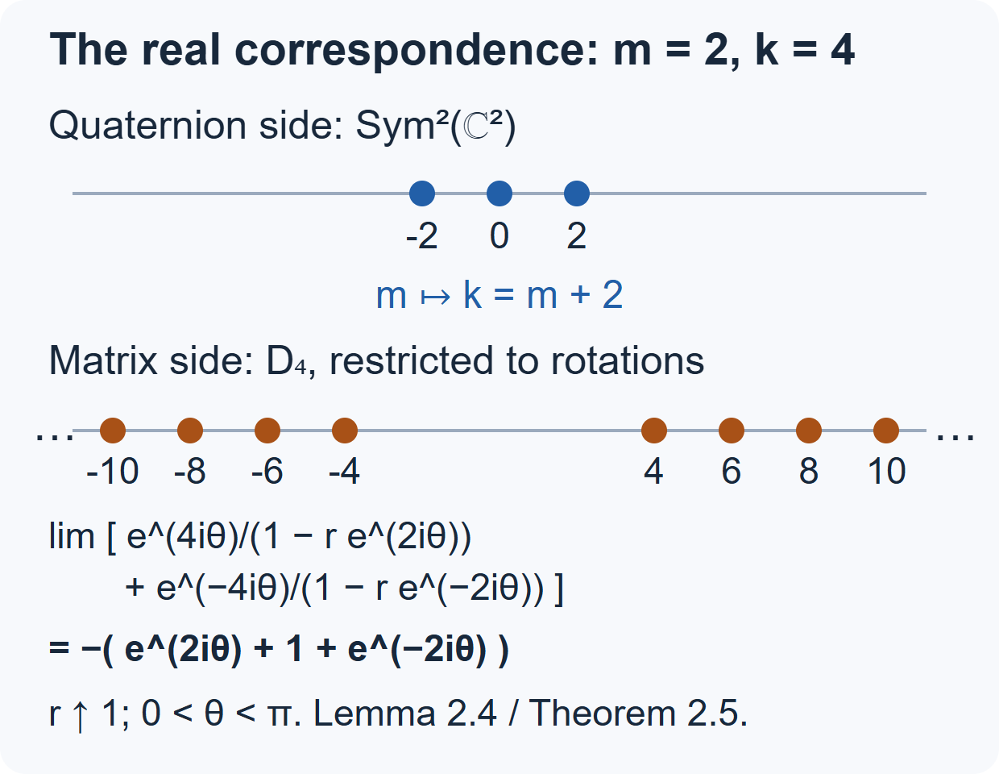
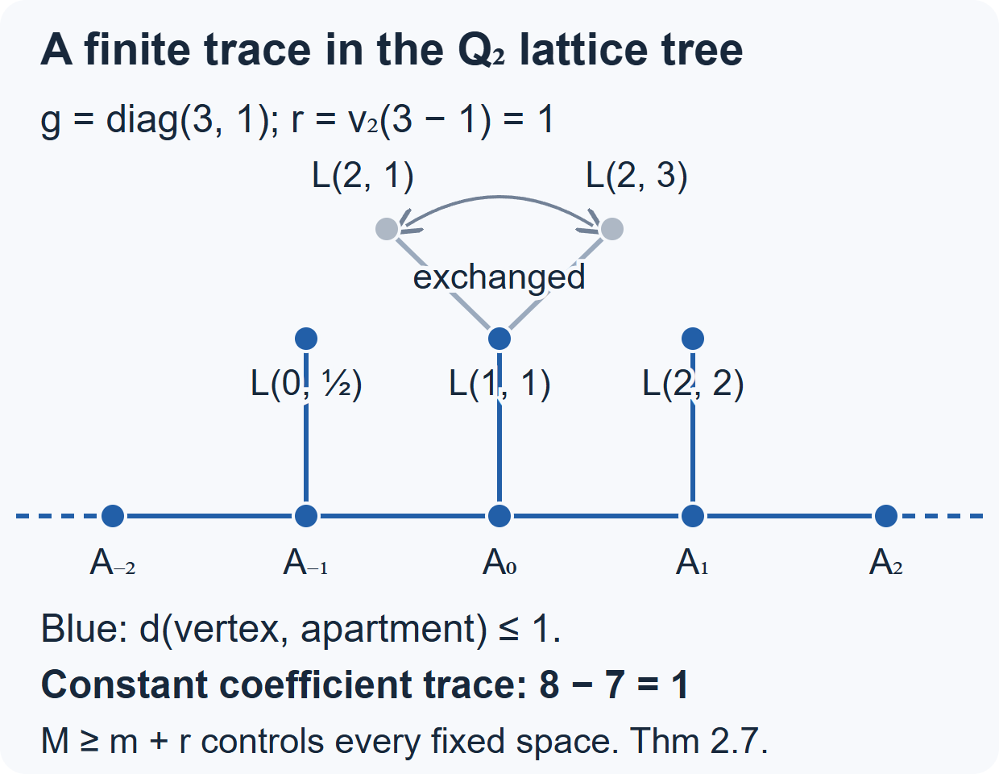
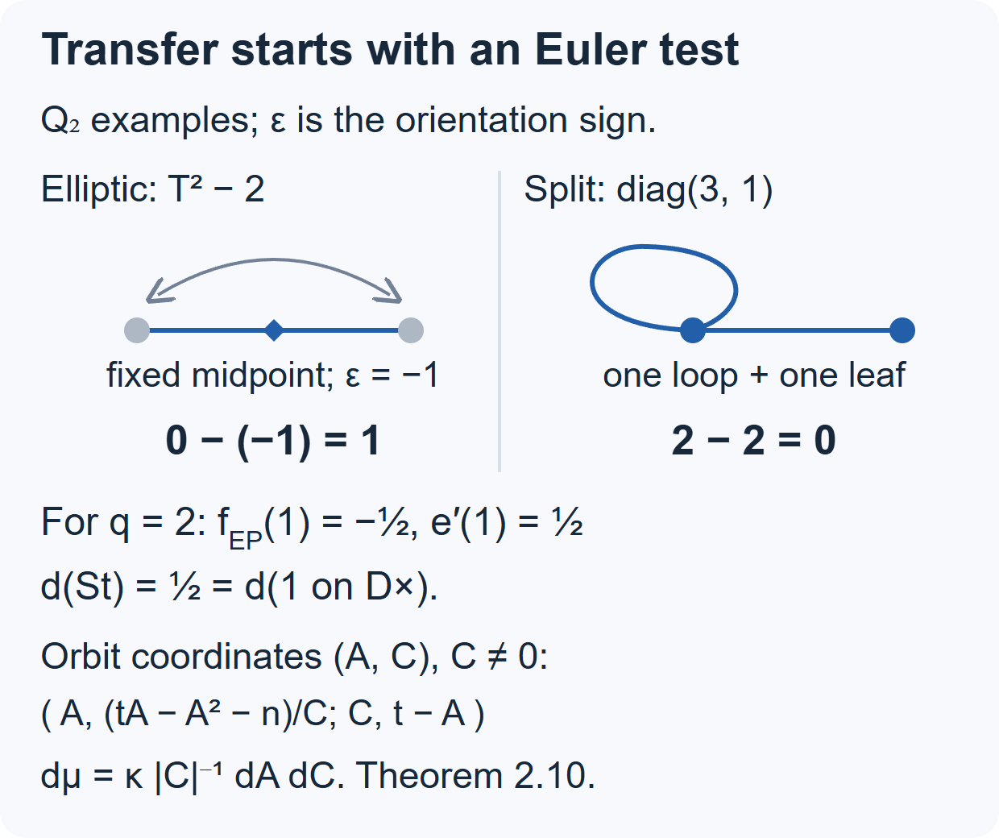
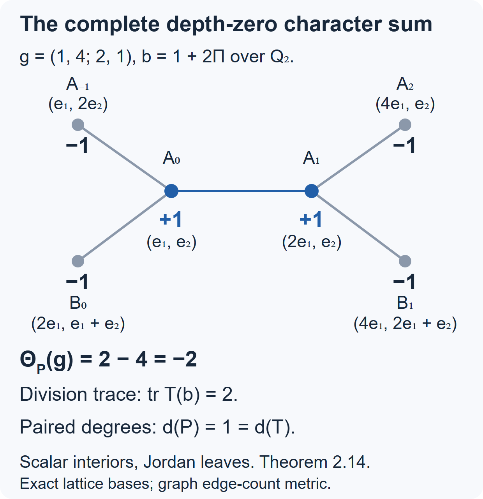

The Jacquet–Langlands correspondence
Written by GPT-6.1 Sol (OpenAI) in Codex, Ultra setting, October 2026. Self-checked by the writing AI. Public domain (CC0).
A quaternion division algebra has fewer conjugacy classes than a matrix algebra, but it retains exactly the regular elliptic ones. Its representations therefore offer a compact setting in which to study part of the spectrum of \(\mathrm{GL}_2\). Jacquet–Langlands makes this relation precise. We will prove the matching of classes, the Steinberg sign, the full real correspondence and the finite-place regular character theorem, finite-place smooth test transfer and its scalar germ, and the complete depth-zero local correspondence with all its twists and the formal degree of every compact-induction model, state the remaining finite local and global assertions with their hypotheses, and compute the two weight-two eigenforms of level \(37\) from a quaternion order.
We use Lesson 17 for quaternion groups and Brandt operators, Lesson 18 for their trace formula, and Lesson 15 for multiplicity one. A discrete series means an irreducible unitary representation square-integrable modulo the centre. Removing the unitary condition requires the term essentially discrete series: a character twist of a discrete series. At a finite place the discrete series of \(\mathrm{GL}_2\) are unitary Steinberg twists and unitary supercuspidals. At a real place they are the discrete series described in Lesson 11.
1. Match classes by their quadratic polynomial
Let \(F\) be a nonarchimedean local field, or \(\mathbb R\), and let \(D\) be the quaternion division algebra over \(F\). Set \(G=\mathrm{GL}_2(F)\), \(G'=D^\times\). An element of \(G\) is regular elliptic when its characteristic polynomial is separable and irreducible over \(F\). For \(b\in D\), use the reduced polynomial \[ P_b(T)=T^2-\operatorname{trd}(b)T+\operatorname{nrd}(b). \tag{1.1} \] Regular means that this polynomial has distinct roots over an algebraic closure. In positive characteristic, irreducibility alone does not ensure separability.
We import two algebraic facts. Every separable quadratic extension of a nonarchimedean local field embeds in its quaternion division algebra, by the quadratic-embedding lemma in Lesson 18, Section 5; it uses the written finite splitting criterion and the local Brauer invariant and degree-two restriction rule proved in Brauer groups of local and global fields, Theorem 24.2. The original reference is Voight, Corollary 13.4.5. Over \(\mathbb R\) this is the embedding \(\mathbb C\subset\mathbb H\). Any two embeddings of the same quadratic field are conjugate by an invertible element, by Skolem–Noether [NOE-HYP-04, Theorem 2.1]. The centralizer of that field in a quaternion algebra is the field itself [NOE-HYP-04, Theorem 3.1].
Theorem 1.1 — the matching bijection. Equality of characteristic polynomials gives a bijection \[ \{\text{regular elliptic classes in }G\} \longleftrightarrow \{\text{regular classes in }G'\}. \tag{1.2} \] For a matched pair \(g,b\), both centralizers identify with \(K^\times\), where \(K=F[T]/(P_g)\). Moreover \(\det g=\operatorname{nrd}b\) and \(\operatorname{tr}g=\operatorname{trd}b\).
Proof. Write a separable irreducible polynomial as \(P(T)=T^2-tT+n\). Its constant term is nonzero. If \(g\) has this polynomial, then for every nonzero \(v\in F^2\), the vectors \(v,gv\) are independent: dependence would give an eigenvalue in \(F\). In this basis, Cayley–Hamilton gives \[ g\sim\begin{pmatrix}0&-n\\1&t\end{pmatrix}. \tag{1.3} \] Thus \(P\) determines exactly one matrix class, and every such \(P\) occurs.
Embed \(K=F[T]/(P)\) in \(D\), and let \(b\) be the image of \(T\). Its minimal polynomial has degree two and divides (1.1), so (1.1) equals \(P\). Different embeddings give conjugate elements by Skolem–Noether. Conversely, if a noncentral regular \(b\in D\) had a reducible reduced polynomial, its distinct linear factors would satisfy \((b-r)(b-s)=0\). A division algebra has no zero divisors; hence \(b=r\) or \(b=s\), a contradiction. Therefore its polynomial is irreducible, and \(F[b]\) is a separable quadratic field. Two elements with the same polynomial define two embeddings of the same \(K\); Skolem–Noether conjugates one to the other.
Finally a matrix commuting with \(g\) is determined by its value on \(v\) in the cyclic basis \(v,gv\). Every such value is \((a+cg)v\), so its algebra centralizer is \(F[g]\). The quaternion centralizer is \(F[b]\) by the stated double-centralizer theorem. Taking units gives the assertion about group centralizers. The trace and norm identities are the coefficients of the common polynomial. \(\square\)
The matching includes the two conjugate generators of \(K\): its nontrivial automorphism extends by Skolem–Noether to conjugation in \(D\). There is no extra choice of a root in (1.2).
For measures, choose corresponding Haar measures on the centralizers \(K^\times\), and compatible group and quotient measures. The regular orbital integral is \[ O_g(f)=\int_{G_g\backslash G}f(x^{-1}gx)\,dx. \tag{1.4} \] One may multiply it by the square root of the Weyl discriminant. That discriminant is the same for matched pairs: both adjoint actions have the same two nontrivial eigenvalue ratios. Thus matching the normalized integrals or the integrals (1.4) amounts to the same condition, once the measures are paired.
The test-function transfer theorem, proved below at finite places and stated at the real place, says that a smooth Hecke test \(f'\) on \(D^\times\) has a test \(f\) on \(G\) whose regular elliptic orbital integrals match those of \(f'\), and whose regular split orbital integrals vanish. Transfer determines orbital integrals, rather than a unique function. Theorem 2.10 proves its existence over every nonarchimedean local field by explicit orbital coordinates, and Lemma 2.11 proves the scalar-value constraint for every matching pair. Arthur, §25, Theorem 25.1(a), is the general reference, including the real case. Equation (1.2) supplies the regular classes on which to impose the conditions.
2. The local representation theorem and its sign
For an admissible representation \(\pi\), its character distribution is \[ f\longmapsto\operatorname{tr}\pi(f),\qquad \pi(f)=\int f(g)\pi(g)\,dg. \tag{2.1} \] At finite places Theorem 2.7 below proves, in either characteristic and every residue characteristic, that on the regular set (2.1) is integration against a conjugation-invariant locally constant function \(\Theta_\pi\). Proposition 2.8 gives the finite elliptic compact-type sum, and the division-side argument following it proves the ordinary trace statement for \(D^\times\). These results suffice for the regular character tests below. For real discrete series, Lemma 2.4 below proves the representing character function on the regular elliptic set directly from the disk model. Arthur, Theorem 25.1(b), is the broader real transfer reference.
Theorem 2.1 — local Jacquet–Langlands (real case proved in Theorem 2.5; finite case stated). Fix a unitary central character \(\omega:F^\times\to\mathbb C^\times\). There is a unique bijection \[ \operatorname{JL}_F: \operatorname{Irr}_\omega(D^\times) \xrightarrow{\ \sim\ } \operatorname{DS}_\omega(\mathrm{GL}_2(F)) \tag{2.2} \] characterized by \[ \Theta_{\operatorname{JL}_F(\tau)}(g) =-\Theta_\tau(b) \qquad(g\leftrightarrow b\text{ regular elliptic}). \tag{2.3} \] Here the source consists of irreducible unitary smooth representations at finite places, and irreducible unitary representations at the real place. The central character is preserved. Twisting is compatible: \[ \operatorname{JL}_F\bigl(\tau\otimes(\chi\circ\operatorname{nrd})\bigr) =\operatorname{JL}_F(\tau)\otimes(\chi\circ\det). \tag{2.4} \] Unitary \(\chi\) keeps (2.2) within discrete series. Allowing arbitrary smooth quasicharacters gives the corresponding bijection onto essentially discrete series.
Theorem 2.14 and Corollary 2.15 below prove the entire depth-zero local correspondence and all determinant/norm twists of that family, in every residue characteristic. Theorem 2.16 also proves the formal degree of every compact-induction model, and Proposition 2.18 computes both positive-level subgroup volumes in every residue characteristic. The finite local bijection for positive-level types beyond those twists, their character identity and their paired dimension comparison remain to be proved. For nonarchimedean \(F\) of characteristic zero, the exact references are Jacquet–Langlands, Theorem 15.1 and Proposition 15.5; Deligne, §3.2.8 gives the same sign and paired formal-degree normalization. Badulescu, Theorem 1.1 supplies the positive-characteristic theorem, including all residue characteristics. Arthur, Theorem 25.1(b) gives the tempered inner-form formulation, including the real place.
At a finite place, the one-dimensional cases are \[ \chi\circ\operatorname{nrd} \longmapsto\mathrm{St}\otimes(\chi\circ\det). \tag{2.5} \] In particular the trivial representation transfers to \(\mathrm{St}\). Higher-dimensional representations transfer to supercuspidals: the remaining discrete series are supercuspidal by Lesson 7, and (2.5) accounts for every special representation. This is a correspondence of isomorphism classes; it is not an identification of representation spaces or of dimensions.
At the real place, write \(\mathbb H^\times=\mathbb R_{>0}\mathrm{SU}(2)\). With trivial positive central character, let \(\tau_m\) restrict to \(\operatorname{Sym}^m(\mathbb C^2)\), \(m\ge0\). Then \[ \tau_m\longmapsto D_{m+2}. \tag{2.6} \] The right side is the discrete series for the full group \(\mathrm{GL}_2(\mathbb R)\). On the positive-determinant component it contains the holomorphic and antiholomorphic ladders; negative determinant exchanges them. The common value on \(-1\) is \((-1)^m=(-1)^{m+2}\), and positive central twists must also agree. Thus the real trivial representation transfers to weight-two discrete series, rather than to the finite-place representation in (2.5).
For example, on \(b=\cos\theta+i\sin\theta\), \(0<\theta<\pi\), the \(\mathrm{SU}(2)\) weights give \[ \Theta_{\tau_m}(b) =\sum_{j=0}^{m}e^{i(m-2j)\theta} =\frac{\sin((m+1)\theta)}{\sin\theta}. \tag{2.7} \] The character of \(D_{m+2}\) on the matching rotation is proved independently to be the negative of (2.7) in Theorem 2.5; it is not inferred from (2.3). There is no quaternion division algebra at a complex place.
2.1. Prove the trivial/Steinberg case directly
Proposition 2.2. For nonarchimedean \(F\), \[ \Theta_{\mathrm{St}}(g)=-1 \qquad(g\text{ regular elliptic}). \tag{2.8} \]
Proof. The unnormalized induced representation \(M=C^\infty(\mathbb P^1(F))\) has the exact sequence \[ 0\longrightarrow\mathbf1\longrightarrow M \longrightarrow\mathrm{St}\longrightarrow0. \tag{2.9} \] This is the exceptional induction sequence proved in Lesson 7, Theorem 4.2. An elliptic element fixes no point of \(\mathbb P^1(F)\): a fixed line would give an eigenvalue in \(F\).
Let \(f\) have compact support \(S\) contained in the regular elliptic set. Put \(X=\mathbb P^1(F)\). The compact set \[ \{(x,gx):x\in X,\ g\in S\}\subset X\times X \] is disjoint from the diagonal. For each \(x\), choose a sufficiently small compact open neighborhood \(U_x\) so that no \(g\in S\) takes a point of \(U_x\) into \(U_x\). Such a neighborhood exists: otherwise successively smaller neighborhoods and compactness of \(S\) give a limit \(g\) fixing \(x\). A finite subcover, refined by all intersections and differences, gives a finite compact open partition with that same exclusion property.
Choose a compact open subgroup \(K\) for which \(f\) is bi-invariant and which preserves every cell of this partition. To obtain the latter condition, continuity of the action and compactness of each cell give a neighborhood of the identity preserving that cell; intersect the finitely many neighborhoods and choose a compact open subgroup inside. The \(K\)-orbits in \(X\) are open because \(K\) is open in the transitive group \(G\), and there are finitely many because \(X\) is compact. They refine the partition.
The image of \(M(f)\) lies in \(M^K\). In its basis of orbit indicators, a diagonal entry, evaluated at a representative \(x_i\) of its orbit \(C_i\), is \[ \int_G f(g)1_{C_i}(g^{-1}x_i)\,dg=0. \] Indeed \(g^{-1}x_i\in C_i\) would put a point and its image under \(g\) in the same partition cell. Hence \(\operatorname{tr}M(f)=0\). Taking \(K\)-invariants is exact by compact averaging, so traces add in (2.9). On constants the trace is \(\int f\). Therefore \[ \operatorname{tr}\mathrm{St}(f)=-\int_G f(g)\,dg. \] The character function is locally constant on the regular set. Testing on arbitrarily small compact open neighborhoods of each elliptic regular element proves (2.8). The trivial character of \(D^\times\) is one, so this proves (2.3) for the trivial representation without assuming the full correspondence. \(\square\)
2.2. Prove the real correspondence from the disk model
The real case of Theorem 2.1 can be proved within the models of Lesson 11, without assuming a character-transfer theorem. We give the square-integrability exclusion as well as the character calculation: constructing some discrete series would not by itself prove surjectivity.
Lemma 2.3 — the real square-integrable list. Among the irreducible admissible unitary representations of the full real group, the square-integrable representations modulo the centre are precisely \[ D_k\otimes|\det|^{i\lambda/2},\qquad k\ge2,\quad\lambda\in\mathbb R. \tag{2.10} \] Here a positive scalar \(aI\) acts as \(a^{i\lambda}\), and \(-I\) acts as \((-1)^k\).
Proof. Lesson 11, Sections 3 and 4, proves the admissible classification, the unitary list and its Hilbert models. Its disk calculation proves that every fixed pair of monomials in \(D_k^+\) has coefficient bounded by a constant times \(\cosh(u/2)^{-k}\) on the Cartan element \(a_u=\operatorname{diag}(e^{u/2},e^{-u/2})\), \(u\ge0\). The radial Haar density modulo the centre is a constant times \(\sinh u\,du\). Consequently these coefficients are square-integrable for \(k>1\). The same calculation proves that \(D_1\) has no nonzero square-integrable coefficient. We must still exclude the principal and complementary series in the unitary list.
Use the compact induced model (3.1) of Lesson 11, with its parameter \(s\) and its parity \(\epsilon\). A central unitary twist does not change the absolute value of a coefficient modulo the centre. Select the weight \(n=0\) for even parity and \(n=1\) for odd parity, and normalize its vector to norm one. Since distinct compact weights are orthogonal in every invariant Hilbert norm, its diagonal coefficient is the \(n\)-th Fourier coefficient in the compact model, including for the complementary series.
Put \(c=\cosh(u/2)\) and \(r=\tanh(u/2)\). The bottom row of \(r_\theta a_u\) is \((-e^{u/2}\sin\theta,e^{-u/2}\cos\theta)\). Its squared length is \[ D=e^u\sin^2\theta+e^{-u}\cos^2\theta =c^2|1-r e^{2i\theta}|^2. \] The compact angle \(\phi\) in its upper-triangular-times-rotation decomposition satisfies \[ e^{i(\phi-\theta)} =\frac{1-r e^{-2i\theta}}{|1-r e^{2i\theta}|}. \] Inserting this and the factor \(D^{-(1+s)/2}\) from normalized induction gives the coefficient \[ \begin{aligned} \varphi_n(s,u) &=\frac{c^{-1-s}}{2\pi}\int_0^{2\pi} (1-r e^{2i\theta})^{-(1+s+n)/2} (1-r e^{-2i\theta})^{-(1+s-n)/2}\,d\theta\\ &=c^{-1-s}\,{}_2F_1\left(\frac{1+s+n}{2}, \frac{1+s-n}{2};1;r^2\right). \end{aligned} \tag{2.11} \] The branches in the integral are the power-series branches at \(r=0\). For \(r<1\), both binomial series converge absolutely and uniformly in \(\theta\); integrating selects their equal exponents. This proves the second equality directly from \({}_2F_1(a,b;1;x)=\sum_{j\ge0}(a)_j(b)_j x^j/(j!)^2\).
We record the continuation needed at \(r=1\), with its derivation. This series solves \[ x(1-x)y''+[1-(a+b+1)x]y'-ab y=0. \] When \(a+b=1+s\) and \(s\notin\mathbb Z\), its two solutions at \(x=1\), normalized by their leading terms, are \[ {}_2F_1(a,b;1+s;1-x),\qquad (1-x)^{-s}{}_2F_1(1-a,1-b;1-s;1-x). \] Substitution verifies the differential equation, and their distinct exponents make them independent. Their coefficients in the solution normalized at zero are \[ A=\frac{\Gamma(-s)}{\Gamma(1-a)\Gamma(1-b)}, \qquad B=\frac{\Gamma(s)}{\Gamma(a)\Gamma(b)}. \tag{2.12} \] Here is a way to establish these constants, rather than assume a connection formula. Expanding \((1-xt)^{-a}\) in the beta integral gives \[ {}_2F_1(a,b;1;x) =\frac{1}{\Gamma(b)\Gamma(1-b)} \int_0^1 t^{b-1}(1-t)^{-b}(1-xt)^{-a}\,dt \] first for \(0<\Re b<1\). If \(\Re(1-a-b)>0\), its value at \(x=1\) is the beta integral \(\Gamma(1-a-b)/(\Gamma(1-a)\Gamma(1-b))\). Absolute convergence of the defining series at one extends this value holomorphically throughout that half-space in \((a,b)\). It gives \(A\) when \(\Re s<0\), since the second local solution then tends to zero. Substitution in the differential equation and uniqueness of its analytic solution at zero also give Euler's transformation \[ {}_2F_1(a,b;1;x)=(1-x)^{-s} {}_2F_1(1-a,1-b;1;x). \] The same value-at-one argument applied to the right side gives \(B\) when \(\Re s>0\). The coefficients of the two local solutions depend meromorphically on the parameters: this follows by solving the two-by-two system of their values and derivatives at any interior point. Analytic continuation therefore proves both expressions (2.12) for every nonintegral \(s\). This also covers \(n=1\), where an Euler integral with the original parameters alone would not cover both half-planes.
Since \(1-r^2=c^{-2}=4e^{-u}(1+O(e^{-u}))\), equations (2.11)–(2.12), and the power series of the local solutions, now give \[ \varphi_n(s,u)=e^{-u/2}\left(C_n(s)e^{-su/2} +C_n(-s)e^{su/2}\right) +O\left(e^{-(3-|\Re s|)u/2}\right), \tag{2.13} \] for fixed nonintegral \(s\), where the gamma duplication identity simplifies the constants to \[ C_0(s)=\frac{\Gamma(-s/2)}{\sqrt\pi\,\Gamma((1-s)/2)}, \qquad C_1(s)=\frac{\Gamma((1-s)/2)}{\sqrt\pi\,\Gamma(1-s/2)}. \tag{2.14} \] All error estimates here are ordinary convergent-series estimates at \(1-r^2=0\); no boundary interchange in (2.11) is needed.
For a principal series, \(s=it\), \(t\ne0\). The gamma function has no zeros, and none of the arguments in (2.14) is a pole; equivalently this follows from the Euler product for \(1/\Gamma\). Thus both coefficients are nonzero. They are complex conjugates. The integral over \([0,T]\) of the squared absolute value of \(C_n(it)e^{-itu/2}+C_n(-it)e^{itu/2}\) equals \(2|C_n(it)|^2T+O(1)\). Multiplying (2.13) squared by \(\sinh u\) changes this by an integrable error and a factor tending to \(1/2\). The coefficient is not square-integrable.
At \(s=0\) in even parity, the poles \(C_0(s)=-2/(\pi s)+O(1)\) and \(C_0(-s)=2/(\pi s)+O(1)\) coalesce. Taking the limit in the convergent local expansions gives \[ \varphi_0(0,u)=e^{-u/2}\left(\frac{2u}{\pi}+O(1)\right). \tag{2.15} \] Indeed the pole parts in (2.13) combine as \(4\sinh(su/2)/(\pi s)\); subsequent series terms are bounded by \(O((1+u)e^{-u})\) inside the parentheses. This coefficient is again not square-integrable. Odd parity at \(s=0\) is \(D_1\), already excluded by the disk calculation.
For a complementary series choose \(0<s<1\), using the equivalence of the parameters \(s\) and \(-s\) proved in Lesson 11. It has even parity. The coefficient of the slower term in (2.13) is \[ C_0(-s)=\frac{\Gamma(s/2)}{\sqrt\pi\,\Gamma((1+s)/2)}>0. \] Thus \(|\varphi_0(s,u)|^2\sinh u\) grows as a positive constant times \(e^{su}\). A unitary finite-dimensional member of the real list is one-dimensional, and its coefficient has constant absolute value; the group modulo the centre has infinite volume, so it too is excluded.
For completeness, a nonintegrable coefficient of the chosen compact weight excludes the existence of any nonzero square-integrable coefficient. In an irreducible unitary representation every nonzero vector is cyclic. If \(\langle\pi(g)v,w\rangle\) were a nonzero square-integrable coefficient, choose translates of \(v,w\) whose projections onto the selected one-dimensional compact weight are nonzero. Such translates exist by cyclicity. The two compact projections express the new coefficient as left and right compact averages of translates of the old one. These operations preserve \(L^2\) by Minkowski's inequality. The new coefficient is a nonzero scalar multiple of \(\varphi_n\), contradicting the calculations above. For the full group, translates may use either component; its compact weight spaces are still one-dimensional in the principal and complementary models. The Haar integral on the positive component already diverges. Together with the full unitary list of Lesson 11, this proves (2.10). \(\square\)
Lemma 2.4 — the disk trace on the elliptic set. Write \(D_k^+\), \(k\ge2\), for the positive ladder on \(\mathrm{SL}_2(\mathbb R)\), with rotation weights \(k+2j\), \(j\ge0\). On its regular elliptic set the character distribution is represented by the smooth function which, at a rotation, is \[ \Theta_k^+(r_\theta)=\frac{e^{ik\theta}}{1-e^{2i\theta}}, \qquad\theta\notin\pi\mathbb Z. \tag{2.16} \] The negative ladder has the same formula with \(\theta\) replaced by \(-\theta\).
Proof. We use precisely the disk Hilbert space and inverse-pullback action constructed in Lesson 11, Section 4.1. Its orthonormal basis and action are \[ e_j(z)=\sqrt{\frac{(k)_j}{j!}}z^j,\qquad \sigma_k(g)f(z)=j_g(z)^{-k}f(\phi_g(z)), \] where \(\phi_g\) is the disk automorphism associated with \(g^{-1}\) and \(j_g(z)\) is its linear denominator. The multiplier has no zero or pole in the disk. For \(0<r<1\), the dilation operator \[ R_r e_j=r^j e_j,\qquad (R_r f)(z)=f(rz), \qquad \|R_r\|_1=(1-r)^{-1} \tag{2.17} \] is trace class. In particular \(R_r\sigma_k(g)\) is trace class. It is weighted composition with \(\Psi_{r,g}(z)=\phi_g(rz)\) and weight \(w_{r,g}(z)=j_g(rz)^{-k}\).
The map \(\Psi_{r,g}\) has a unique fixed point \(z_{r,g}\) in the disk. To see this, use the complete hyperbolic disk metric. A disk automorphism is an isometry, whereas multiplication by \(r\) has hyperbolic differential norm \[ \frac{r(1-|z|^2)}{1-r^2|z|^2}\le r<1. \] The contraction theorem gives the fixed point. Conjugate weighted composition by a unitary disk automorphism taking that fixed point to zero. The new symbol fixes zero, its derivative there is \(\Psi_{r,g}'(z_{r,g})\), and its new weight at zero is \(w_{r,g}(z_{r,g})\); the conjugating multipliers cancel at a fixed point. The diagonal coefficient on \(e_j\) is therefore \(w_{r,g}(z_{r,g})\Psi_{r,g}'(z_{r,g})^j\). Trace invariance under unitary conjugacy and the absolute convergence of a trace-class diagonal give \[ \operatorname{tr}(R_r\sigma_k(g)) =\frac{j_g(rz_{r,g})^{-k}} {1-r\phi_g'(rz_{r,g})}. \tag{2.18} \] The denominator is nonzero since the fixed-point derivative has absolute value at most \(r\).
If \(g\) is regular elliptic, \(\phi_g\) has an interior fixed point \(z_g\) and its derivative there differs from one. The implicit function theorem applied to \(z-\phi_g(rz)=0\) proves that \(z_{r,g}\) tends to \(z_g\) smoothly as \(r\uparrow1\), uniformly when \(g\) ranges over a compact subset of the regular elliptic set. Uniqueness of the contraction fixed point identifies this local solution with \(z_{r,g}\). Thus (2.18) has a uniform smooth limit on each such compact subset. Conjugating \(g\) to \(r_\theta\) computes this limit: at zero its multiplier is \(e^{ik\theta}\), and its symbol derivative is \(e^{2i\theta}\). The limiting expression is conjugation invariant because a conjugating multiplier again cancels at the fixed point. This proves the candidate function (2.16).
It remains to identify the limit with the character distribution, rather than a merely formal sum of weights. For \(f\in C_c^\infty(\mathrm{SL}_2(\mathbb R))\), integrating by parts in the left and right rotation variables gives, for every \(N\), \[ |\langle\sigma_k(f)e_j,e_i\rangle| \le C_{f,N}(k+2i)^{-N}(k+2j)^{-N}. \tag{2.19} \] The constant can be taken to be the \(L^1\)-norm of the corresponding derivatives of \(f\): coefficients of unitary operators between unit vectors are at most one. For \(N>1\) the matrix entries are absolutely summable. Its sum of rank-one matrix operators converges in trace norm and agrees with \(\sigma_k(f)\) on all basis vectors. Hence \(\sigma_k(f)\) is trace class.
The bounded operators \(R_r\) tend strongly to the identity and have norm at most one. Finite-rank approximation of a trace-class operator then gives \(\|R_r\sigma_k(f)-\sigma_k(f)\|_1\to0\). For each fixed \(r<1\), the trace-class bound in (2.17) permits integration of (2.18) against \(f\). If the support of \(f\) is regular elliptic, its uniform limit just proved gives \[ \operatorname{tr}\sigma_k(f) =\lim_{r\uparrow1}\int f(g)\operatorname{tr}(R_r\sigma_k(g))\,dg =\int f(g)\Theta_k^+(g)\,dg. \tag{2.20} \] This proves the assertion as a distribution on the entire regular elliptic set. Complex conjugation gives the negative ladder. \(\square\)
Theorem 2.5 — real local Jacquet–Langlands, proved. The real case of (2.2)–(2.4) is the unique map \[ a^{i\lambda}\operatorname{Sym}^m(\mathbb C^2) \longmapsto D_{m+2}\otimes|\det|^{i\lambda/2}, \qquad a>0,\quad m\ge0. \tag{2.21} \] In particular it includes every real discrete series in the stated admissible category, with both ladders for the full group.
Proof. An irreducible unitary representation of a compact group is finite-dimensional: averaging a rank-one orthogonal projection over the group gives a nonzero positive compact operator commuting with the representation; a positive eigenspace is finite-dimensional and invariant, hence is the entire irreducible representation. Norm continuity of the translated rank-one projections makes this average a compact operator, and its trace is one, so it is nonzero. The positive scalar group in \(\mathbb H^\times\) acts by a character, by the unitary Schur lemma. Its \(\mathrm{SU}(2)\) restriction is irreducible, since that character is scalar.
For clarity, the compact classification used here follows from the finite-dimensional \(\mathfrak{sl}_2\) calculation. Choose a highest-weight vector \(v\) of weight \(m\). Then \(EF^jv=j(m-j+1)F^{j-1}v\). If \(F^Nv\ne0\) and \(F^{N+1}v=0\), this identity forces \(m=N\ge0\); the span of these vectors is invariant and hence is the whole representation. It is \(\operatorname{Sym}^m(\mathbb C^2)\), with weights \(m,m-2,\ldots,-m\). A connected group representation is determined by its derivative, so this also identifies the \(\mathrm{SU}(2)\) representation. Its value at \(-1\) is \((-1)^m\).
Lemma 2.3 now makes (2.21) a bijection preserving the entire central character. For a matching elliptic pair, remove its positive scalar \(a\) and conjugate its unit part to \(\cos\theta+i\sin\theta\), or to the matching rotation. By Lemma 2.4 and the two-ladder decomposition in Lesson 11, \[ \begin{aligned} \Theta_{D_k}(r_\theta) &=\frac{e^{ik\theta}}{1-e^{2i\theta}} +\frac{e^{-ik\theta}}{1-e^{-2i\theta}}\\ &=-\frac{\sin((k-1)\theta)}{\sin\theta} =-\sum_{j=0}^{k-2}e^{i(k-2-2j)\theta}. \end{aligned} \tag{2.22} \] The same integration-by-parts proof gives trace-class test operators on the full real group, using its two sets of compact weights. On the negative-determinant component the representation exchanges the ladders, so the smoothed diagonal trace is zero; on the positive component it is the sum used in (2.22). A positive scalar multiplies the character by \(a^{i\lambda}\). Equation (2.22) is exactly the negative of (2.7) with \(m=k-2\), as required. The distinct Laurent polynomials in (2.22) show uniqueness among the discrete series with the fixed positive central character.
Twisting on either side multiplies the matched character by the same value \(\chi(\operatorname{nrd}b)=\chi(\det g)\). A sign determinant twist is isomorphic on the full two-ladder representation, as proved in Lesson 11, and \(\operatorname{nrd}\) on \(\mathbb H^\times\) is positive. This proves (2.4), and arbitrary quasicharacter twists give the essentially discrete-series extension. \(\square\)

Figure 1. For \(m=2\), the compact character has weights \(-2,0,2\), whereas \(D_4\) has the two infinite ladders starting at \(\pm4\). Equation (2.17) makes their traces convergent before passing to the limit. Equation (2.22), for \(0<\theta<\pi\), leaves the negative of the three compact weights. The displayed ladders are truncated schematically; the trace identity is exact. The mechanism and analytic justification are Lemma 2.4 and Theorem 2.5, using the disk action proved in Lesson 11, Section 4.1. A human-source comparison for that realization is Gazeau–del Olmo–Pejhan, Section II, equations (8)–(9), with \(2\eta=k\); their opposite rotation convention must be reversed when comparing their equation (22).
The real formal degrees can also be compared with explicit measures. Give each component of \(G/Z\) the Cartan integration formula with probability measures on its two compact angular variables and radial density \(\sinh u\,du\). Give the compact group \(\mathbb H^\times/\mathbb R^\times\) volume \(2\). For a unit vector of lowest positive weight in \(D_k\), the coefficient on \(a_u\) is \(\cosh(u/2)^{-k}\) and it is zero on the other component. Hence \[ \int_{G/Z}|\langle D_k(g)v,v\rangle|^2\,dg =\int_0^\infty\sinh u\,\cosh(u/2)^{-2k}\,du =2\int_1^\infty x^{-k}\,dx=\frac{2}{k-1}. \tag{2.23} \] This does give the formal degree, rather than just one coefficient norm. Define the coefficient map \(T\) into the centrally covariant \(L^2(G/Z)\) space on its maximal domain, consisting of vectors whose coefficients are square-integrable. This domain contains the dense finite-weight vectors. The map is closed: an \(L^2\)-convergent sequence has an almost-everywhere convergent subsequence, whereas convergence of the input vectors gives pointwise convergence of their coefficients. Its domain is invariant under the group, because translation preserves the coefficient norm, and the closed map intertwines the unitary actions. The spectral projections of its positive operator \(T^*T\) commute with the irreducible representation, so it is scalar; the norm of the coefficient in (2.23) determines that scalar. Inversion of \(g\) exchanges the two vectors in the absolute-square integral, giving the same constant times the squared norm of an arbitrary second vector. This proves the full Schur orthogonality constant. On the compact quaternion quotient the finite-dimensional Schur average gives coefficient norm \(2/(m+1)\). Thus these explicit measures give \[ d(D_k)=\frac{k-1}{2}=d(\operatorname{Sym}^{k-2}\mathbb C^2). \tag{2.24} \] This calculation concerns formal degrees. At finite places Lemma 2.11 below proves the identity-value relation for every matching pair of tests. Its real counterpart remains the scalar-germ transfer input in Section 3.2.
2.3. Prove the finite-place character theorem on the regular set
We now prove the regular-set character statement used in (2.1), for every nonarchimedean local field, including residue characteristic two and positive characteristic. This proof concerns the restriction of the distribution to the regular set. Section 2.4 separately proves smooth orbital transfer and the scalar orbital germ. It does not identify the character distribution globally across the singular set.
Write \(\mathcal O\) for the valuation ring, \(\mathfrak p=(\varpi)\), and \(v(\varpi)=1\). The lattice tree \(\mathcal T\) has vertices the homothety classes of rank-two \(\mathcal O\)-lattices in \(F^2\). Two vertices are adjacent if representatives satisfy \(\varpi L\subset L'\subset L\), with \(L'/\varpi L\) a line over the residue field. Each vertex has \(q+1\) neighbors. The metric is the number of edges in a path, rather than a Euclidean metric on a drawing.
Here are the elementary tree facts we will use. Elementary divisors, proved by the row and column elimination in Lesson 6, equation (5.4), put any pair of vertices in the form \([\mathcal O^2]\), \([\mathcal O\varpi^N e_1+\mathcal Oe_2]\), \(N\ge0\). Their path consists of the intermediate exponents. At a vertex other than the initial one, reduction of the elementary-divisor basis modulo \(\mathfrak p\) identifies exactly one neighbor whose distance to the initial vertex decreases; the other \(q\) increase it. Induction gives the unique path, so the graph is a locally finite tree. Its ends are \(\mathbb P^1(F)\): a ray starting at \([\mathcal O^2]\) specifies compatible primitive line data modulo every \(\mathfrak p^N\), and completeness gives its unique limiting line. Conversely a primitive vector on a line gives these data and a ray. The usual action of \(G\) on the ends is the action on lines; it is continuous. The tree with its ends is compact after adjoining the ends: a sequence escaping every finite ball has a subsequence with each finite initial path fixed, by a diagonal selection in the finite branching tree.
For a vertex \(x=[L]\), and an integer \(m\ge1\), set \[ U_x(m)=1+\mathfrak p^m\operatorname{End}_{\mathcal O}(L), \qquad e_x=\frac{1_{U_x(m)}}{\operatorname{vol}U_x(m)}, \qquad V_x=e_xV. \tag{2.25} \] The order, group and average do not depend on the representative of the homothety class. We use the same symbol \(e_x\) for the convolution operator on a representation. For an edge \(a=\{x,z\}\), put \(e_a=e_xe_z\) and \(V_a=e_aV\).
Lemma 2.6 — the exact tree complex and its finite projection. For any smooth representation, the averages at adjacent vertices commute. If \(z\) is the first neighbor of \(x\) on the path to \(y\ne x\), then \[ e_xe_z=e_ze_x,\qquad e_xe_ze_y=e_xe_y. \tag{2.26} \] For a finite subtree \(\Sigma\), the operator \[ u_\Sigma=\sum_{x\in\Sigma^{(0)}}e_x -\sum_{a\in\Sigma^{(1)}}e_a \tag{2.27} \] is an idempotent with image \(S_\Sigma=\sum_{x\in\Sigma^{(0)}}V_x\), and acts as the identity on that image. With an arbitrary orientation for each edge, the sequence \[ 0\longrightarrow\bigoplus_{a\in\Sigma^{(1)}}V_a \xrightarrow{\partial}\bigoplus_{x\in\Sigma^{(0)}}V_x \xrightarrow{\mathrm{sum}}S_\Sigma\longrightarrow0 \tag{2.28} \] is exact. The edge boundary is its inclusion at the terminal vertex minus its inclusion at the initial vertex. If an irreducible smooth representation has \(V_{x_0}\ne0\), the sum of all \(V_x\) is the entire representation.
Proof. Conjugate a pair and its path to \(x=[\mathcal O^2]\), \(z=[t_1\mathcal O^2]\), \(y=[t_N\mathcal O^2]\), where \(t_j=\operatorname{diag}(\varpi^j,1)\) and \(N\ge1\). In this basis \(U_z(m)\) has diagonal entries in \(1+\mathfrak p^m\), upper entries in \(\mathfrak p^{m+1}\), and lower entries in \(\mathfrak p^{m-1}\). It is contained in \(\mathrm{GL}_2(\mathcal O)\), so it normalizes \(U_x(m)\). Conversely \(t_1^{-1}U_x(m)t_1\) is integral, so \(U_x(m)\) normalizes \(U_z(m)\). Their product is therefore a compact subgroup, and either order of averaging is its normalized average. Its fixed space is \(V_x\cap V_z\), which proves the first identity and the assertion about \(V_a\).
Gaussian elimination in \(U_z(m)\) factors an element into upper root, diagonal and lower root elements with precisely those entry bounds. The upper root and diagonal elements lie in \(U_x(m)\); the lower root lies in \(U_y(m)\), because \(\mathfrak p^{m-1}\subset\mathfrak p^{m-N}\). The first two act trivially on \(e_xe_yV\). The last also acts trivially there: it normalizes \(U_x(m)\), so commutes with \(e_x\), and it acts trivially on \(e_yV\). Thus \(e_ze_xe_y=e_xe_y\). The adjacent commutation gives the second identity in (2.26). These arguments are identities of compact averaging operators and do not assume unitarity. Inverting the compact measures gives the reversed identity \(e_ye_ze_x=e_ye_x\).
Prove (2.27) by adding a leaf \(x\), with neighbor \(z\), to a smaller subtree \(\Sigma'\). Put \(p_x=e_x(1-e_z)\). Adjacent commutation makes \(p_x\) an idempotent. For every vertex \(y\in\Sigma'\), equation (2.26) gives \(p_xe_y=e_yp_x=0\), and the same holds with each edge average of \(\Sigma'\). Hence \(u_{\Sigma'}p_x=p_xu_{\Sigma'}=0\) and \(u_\Sigma=u_{\Sigma'}+p_x\) is an idempotent. It is the identity on every old \(V_y\). On \(V_x\), use \(e_xe_zV\subset V_z\), where \(u_{\Sigma'}\) is the identity, and \(u_{\Sigma'}p_x=0\), to obtain \(u_\Sigma e_x=e_x\). Every summand in (2.27) has image in \(S_\Sigma\), proving the claimed image. This starts with a one-vertex tree.
For exactness, suppose finitely many vertex vectors sum to zero. At a leaf \(x\), apply \(p_x\) to this sum; every other vertex term is killed, so \(p_xv_x=0\). Thus \(v_x=e_zv_x\in V_x\cap V_z=V_a\). Subtract the boundary of this edge vector, with the appropriate sign, to remove the leaf term and transfer it to \(z\). Repeat on the smaller tree. This proves exactness in the middle. An edge cycle is zero by inspecting a leaf, where its unique incident edge vector must vanish, and then removing the leaf. Surjectivity is the definition of \(S_\Sigma\). Finally a nonzero \(V_{x_0}\) generates an irreducible representation; its translates lie in the corresponding \(V_{gx_0}\). \(\square\)
Every irreducible smooth representation permits an \(m\ge1\) with \(V_{[\mathcal O^2]}\ne0\), by smoothness of a nonzero vector. Admissibility, proved in Lesson 6, Theorem 5.4, makes all the vertex and edge spaces finite-dimensional. We fix such an \(m\) from now on. For a general coefficient-system comparison, see Meyer–Solleveld, Definition 2.1, Lemma 2.6 and Theorem 2.12. The rank-two group identities and leaf proof needed here have just been supplied explicitly.
Theorem 2.7 — finite-place regular characters, proved. For every irreducible smooth complex representation \(\pi\) of \(\mathrm{GL}_2(F)\), the character distribution on the regular set is integration against a unique conjugation-invariant locally constant function \(\Theta_\pi\). This holds in either characteristic, with no restriction on residue characteristic.
Proof. First consider an element compact modulo the centre. It fixes a vertex or an edge midpoint of \(\mathcal T\). For split eigenvalues of equal absolute value this follows by scaling them to units in a diagonal basis. For an irreducible quadratic polynomial, its field \(E=F[g]\) has the integral lattice \(\mathcal O_E\). Multiplication by a unit preserves that lattice; if the ramification index is two, an element of odd \(E\)-valuation instead exchanges the lattice classes of \(\mathcal O_E\) and \(\mathfrak p_E\). Scaling by \(F^\times\) reduces the valuation to these cases. This is also the compact-adjoint criterion of Lesson 10, Lemma 7.1.
Choose a fixed point \(c\) that is a vertex or an edge midpoint, and let \(C=G_c\) be its stabilizer. This is an open subgroup, compact modulo the centre. Finite balls \(\Sigma_N\) about \(c\), including their edges, are invariant under \(C\). If \(f\) is a compactly supported smooth function in \(C\), its operator has finite rank by admissibility. Its image lies in some \(S_{\Sigma_{N_0}}\), because Lemma 2.6 exhausts \(V\). For \(N\ge N_0\), the exact finite sequence (2.28) is equivariant for \(C\); traces add along it. Therefore \[ \begin{aligned} \operatorname{tr}\pi(f)&=\int_C f(h)\,T_N(h)\,dh,\\ T_N(h)&=\sum_{\substack{x\in\Sigma_N^{(0)}\\hx=x}} \operatorname{tr}(\pi(h)|_{V_x}) -\sum_{\substack{a\in\Sigma_N^{(1)}\\ha=a}} \varepsilon(h,a)\operatorname{tr}(\pi(h)|_{V_a}). \end{aligned} \tag{2.29} \] Here \(\varepsilon(h,a)=1\) if both endpoints are fixed and \(-1\) if they are exchanged. An edge orientation contributes that sign to the chain action. For a cell moved to a different cell the diagonal block on the direct sum is zero. This proves (2.29) without a character theorem. The threshold \(N_0\) may initially depend on \(f\).
For a regular elliptic \(g\), the set of its fixed vertices and edges is finite. Otherwise their geometric fixed-point set contains a ray, since it is convex in a locally finite tree; its end would be an \(F\)-eigenline. Such a line cannot exist for an elliptic element. This fixed-cell set is uniformly bounded on a neighborhood of \(g\). Indeed, if \(g_j\to g\) fixed cells escaping every finite ball, a subsequence of their centres would converge to an end \(\ell\). Continuity of the action on the tree and its ends gives \(g\ell=\ell\), again an eigenline. This reasoning also applies to inverted edges, by using their midpoints. A neighborhood of \(g\) consists of elliptic elements: the set of matrices fixing a line is closed, since \(\mathbb P^1(F)\) is compact. Shrink it to be regular as well and to lie in \(C\).
Within the resulting bounded ball, further shrinking makes the permutation of all cells constant and makes every relevant finite-dimensional matrix trace constant. For the latter, \(g^{-1}h\) may be taken in all the finitely many compact groups \(U_x(m)\) involved, so acts trivially on their fixed spaces; edge spaces are subspaces of their endpoint spaces. Thus for all sufficiently large \(N\), \(T_N\) is the same locally constant finite sum on this neighborhood. Equation (2.29), applied to arbitrary tests there, proves the character assertion at \(g\).
Compact split elements require more care: their fixed set is infinite, and an unqualified infinite vertex sum is not a character formula. After conjugation and a scalar translation, let \(g=\operatorname{diag}(a,b)\), \(a,b\in\mathcal O^\times\), \(a\ne b\). Put \(\delta=a/b\) and \(r=v(\delta-1)\ge0\). Let \(A\) be the diagonal apartment, with vertices \(A_n=[\mathcal O\varpi^ne_1+\mathcal Oe_2]\), \(n\in\mathbb Z\).
Every vertex has a unique presentation \[ L(n,x)=\mathcal O\varpi^ne_1+\mathcal O(e_2+xe_1), \qquad x\in F/\mathfrak p^n. \] To obtain it, scale the projection of a lattice to the second coordinate to \(\mathcal O\); its intersection with the first coordinate is \(\mathfrak p^ne_1\), and a lift of \(e_2\) gives \(x\) modulo that ideal. For \(x=0\), this is \(A_n\). Otherwise choose its representative with \(v(x)=l<n\). The successive lattices \(L(j,x)\), \(l\le j\le n\), give its path from \(A_l\), with the first step off the apartment. The two apartment directions at \(A_l\) are the coordinate lines, whereas this first step has both coordinates nonzero after scaling. Thus its distance from \(A\) is \(d=n-l\). Direct multiplication shows \[ gL(n,x)=L(n,x) \ \Longleftrightarrow\ (\delta-1)x\in\mathfrak p^n \ \Longleftrightarrow\ d\le r. \tag{2.30} \] Its fixed vertices are exactly the tube of radius \(r\) about \(A\); its fixed edges have both endpoints in that tube. There is no edge inversion, since the determinant valuation is even.
Consider \(t=\operatorname{diag}(1+u,1+w)\), with \(u,w\in\mathfrak p^M\), \(M\ge m+r\). In the basis \(\varpi^ne_1,e_2+xe_1\), its only off-diagonal entry is \((u-w)x\varpi^{-n}\), of valuation at least \(M-d\). Consequently \(t\in U_{L(n,x)}(m)\) for every vertex fixed by \(g\), and it is the identity on every corresponding edge space too. Require also \(M>r\). For all sufficiently small changes \(a',b'\) of the two eigenvalues, their ratio has the same \(r\), and \(\operatorname{diag}(a',b')=gt\) with such a \(t\). Equations (2.29)–(2.30) therefore give \[ T_N(\operatorname{diag}(a',b'))=T_N(g) \qquad\text{for every }N. \tag{2.31} \] The use of \(M\ge m+r\) is uniform along the infinite apartment.
Every sufficiently near matrix \(h\) is conjugate to such a diagonal matrix by an element of \(\mathrm{GL}_2(\mathcal O)\) near the identity. For completeness, write its monic characteristic polynomial as \(P\). Near \(a\), choose a radius \(\rho<|a-b|\) and shrink the matrix perturbation so that \(|P(a)|\le\rho|P'(a)|\) and \(|P'(a)|=|a-b|\). The equation for a root \(a+z\) is \(z=-P(a)/P'(a)-z^2/P'(a)\). On \(|z|\le\rho\) this map preserves the ball and strictly contracts it. Successive approximation gives a unique root there; the same argument near \(b\) gives the other root. Taking \(\rho\) arbitrarily small proves their continuous dependence. The projectors \((h-b')/(a'-b')\) and \((h-a')/(b'-a')\), applied to \(e_1,e_2\), then give an eigenbasis near the original one. This argument divides by \(a'-b'\), never by two, so it works in characteristic two. Conjugating by an integral element preserves every ball about \(A_0\) and transports all the fixed-vector spaces. Hence (2.31) holds on one neighborhood \(U\) of \(g\) in \(C=G_{A_0}\), for every \(N\).
Choose a test \(f_0\) supported in \(U\), with integral one. Equation (2.29) gives \(T_N(g)=\operatorname{tr}\pi(f_0)\) for all sufficiently large \(N\). Thus these constants stabilize, and do so uniformly on \(U\). For any other test \(f\) supported there, take \(N\) larger than both its finite-image threshold and the threshold for \(f_0\). Then (2.29) is the claimed integration against the same constant on \(U\). This establishes local constancy and the distributional identity at every compact split regular element, rather than only convergence of an averaged expression.
It remains to treat split elements with unequal absolute values. Supercuspidals have zero character distribution on a neighborhood of each such element by Lesson 10, Theorem 7.3. By the classification in Lesson 7, the other irreducibles are principal series, Steinberg twists and determinant characters. We supply the principal-series calculation on the entire regular set.
In the chart with representative \(\overline n(x)=\begin{pmatrix}1&0\\x&1\end{pmatrix}\) for the row line \((x,1)\), a normalized induced representation \(I(\mu_1,\mu_2)\) acts by weighted composition. For \(h=\begin{pmatrix}A&B\\C&D\end{pmatrix}\), put \[ \phi_h(x)=\frac{Ax+C}{Bx+D},\qquad w_h(x)=\mu_1\left(\frac{\det h}{Bx+D}\right) \mu_2(Bx+D)\left|\frac{\det h}{(Bx+D)^2}\right|^{1/2}. \tag{2.32} \] These formulas follow by multiplying \(\overline n(x)h\) and performing its upper-triangular-times-\(\overline n\) decomposition. Other charts give the same induced line bundle, with their usual transition multipliers.
A compactly supported smooth group test gives a locally constant integral kernel on each pair of small projective charts. To see this directly, in (2.32) use \(y=\phi_h(x)\) and \(C=(Bx+D)y-Ax\) as a group coordinate. With additive measures, Haar measure is a constant times \(|\det h|^{-2}\,dA\,dB\,dC\,dD\), and \(dC=|Bx+D|\,dy\). On a sufficiently small chart the denominator is nonzero and bounded away from zero over the compact group support. The resulting integrand is locally constant in \((x,y)\), uniformly over a compact parameter set. Integrating in \((A,B,D)\) gives the claimed kernel. Finitely many such charts cover \(\mathbb P^1(F)\). Refining their clopen partitions makes the kernel constant on each pair of cells; the matrix trace is therefore its diagonal integral, since each diagonal entry is the diagonal kernel value times the measure of its cell.
Near \(g=\operatorname{diag}(a,b)\), \(a\ne b\), only its two fixed projective points can contribute to that diagonal trace. On the compact complement of small neighborhoods of those points, \(g\) fixes no line, and the same exclusion holds for all sufficiently near \(h\). In the chart near zero the diagonal condition is \(C=Bx^2+(D-A)x\). Its derivative in \(x\) is \(D-A+2Bx\), of fixed nonzero absolute value on a sufficiently small neighborhood. Here the change of variables can be checked without a general inverse function theorem. Choose the ball about zero with radius \(\rho\) so that \(|B|\rho<|D-A|\). On it the equation \(C=(D-A)x+Bx^2\) is solved by the strict contraction \(x=C/(D-A)-Bx^2/(D-A)\). Differences satisfy \(|C(x)-C(y)|=|D-A|\,|x-y|\); successive approximation proves bijectivity onto the ball of radius \(|D-A|\rho\), and this exact scaling of subballs proves the Jacobian. Thus \(x\) is a unique coordinate for the corresponding \(C\)-ball. The Jacobian in the diagonal integral is consequently \[ \frac{|Bx+D|}{|D-A+2Bx|} =\frac{1}{|1-\phi_h'(x)|}, \tag{2.33} \] since at a fixed point \(\phi_h'(x)=(A-Bx)/(D+Bx)\). All these substitutions are in compact chart integrals. They remain valid in characteristic two, where the derivative term \(2Bx\) is simply zero. The chart at infinity gives the other fixed point. The two fixed-point multipliers and derivatives for the diagonal matrix are \(\mu_1(a)\mu_2(b)|a/b|^{1/2},a/b\) and \(\mu_1(b)\mu_2(a)|b/a|^{1/2},b/a\). Thus \[ \Theta_{I(\mu_1,\mu_2)}(\operatorname{diag}(a,b)) =\frac{\mu_1(a)\mu_2(b)+\mu_1(b)\mu_2(a)} {|1-a/b|^{1/2}|1-b/a|^{1/2}}. \tag{2.34} \] The same local eigenbasis argument as before proves that this function represents the distribution on a neighborhood, and is locally constant there. On the elliptic set there is no fixed projective point, so the diagonal kernel is zero and the principal-series character is zero.
Taking traces in the exact induced sequence (2.9), which is exact on every compact fixed space, gives the remaining explicit characters. In particular \[ \begin{aligned} \Theta_{\chi\circ\det}(h)&=\chi(\det h),\\ \Theta_{\mathrm{St}\otimes(\chi\circ\det)}(\operatorname{diag}(a,b)) &=\chi(ab)\left(\frac{|a|+|b|}{|a-b|}-1\right),\\ \Theta_{\mathrm{St}\otimes(\chi\circ\det)}(h) &=-\chi(\det h)\qquad(h\text{ regular elliptic}). \end{aligned} \tag{2.35} \] These expressions and supercuspidal support handle every noncompact split element. They also agree with the compact argument by uniqueness of a representing function: testing on arbitrarily small open sets identifies any two locally constant representatives. Conjugation invariance of the character distribution then gives conjugation invariance of the unique function. This proves the theorem on the entire regular set. \(\square\)

Figure 2. This is the complete ball of radius two about \(A_0\) in the \(q=2\) lattice tree. For \(g=\operatorname{diag}(3,1)\) over \(\mathbb Q_2\), \(r=v_2(3-1)=1\). The blue vertices are exactly those fixed by \(g\) in the displayed ball, by (2.30); the two gray depth-two vertices are exchanged. The apartment extends in both directions beyond the drawing. Distances count edges. For the trivial coefficient system the trace is \(8-7=1\), the fixed vertices minus the fixed edges in (2.29). For general representations their finite-dimensional traces replace these ones. The fixed-set calculation and the uniform bound \(M\ge m+r\), together with admissibility, are the mechanism of Theorem 2.7. For the general coefficient-system method, compare Meyer–Solleveld, Theorem 2.12 and Proposition 4.1; the illustration is independently drawn.
Proposition 2.8 — the finite elliptic compact-type character sum. Let \(\pi=\mathrm{c\!-\!Ind}_J^G\tau\), where \(J\) is open, contains the centre and is compact modulo the centre, and \(\tau\) is finite-dimensional. Assume \(\pi\) is irreducible. For a regular elliptic element \(g\), \[ \Theta_\pi(g)=\sum_{\substack{Jx\in J\backslash G\\xgx^{-1}\in J}} \operatorname{tr}\tau(xgx^{-1}). \tag{2.36} \] The sum is finite and is uniformly a finite sum on a neighborhood of \(g\). Every supercuspidal has this description by Lesson 10, Theorem 7.8, including residue characteristic two.
Proof. The compact group \(J/Z\) has a finite orbit on the vertices of the locally finite tree. The convex hull of that orbit is finite; its centre is a vertex or edge midpoint fixed by all of \(J\). Call it \(c_J\). The index \([G_{c_J}:J]\) is finite, since \(J\) is open and both groups contain \(Z\), while \(G_{c_J}/Z\) is compact.
If \(xgx^{-1}\in J\), then \(g\) fixes \(x^{-1}c_J\). The fixed vertices and edge midpoints for an elliptic element are finite and uniformly bounded on a neighborhood, as proved in Theorem 2.7. For each possible point, the fibre of \(Jx\mapsto x^{-1}c_J\) has at most \([G_{c_J}:J]\) elements: after selecting one \(x\) it is a translate of \(J\backslash G_{c_J}\). This proves both finiteness assertions. Membership in the open subgroup \(J\) and the finite-dimensional smooth trace of \(\tau\) are locally constant for this finite list.
The compact-induction space is the algebraic direct sum of copies of the space of \(\tau\), indexed by \(J\backslash G\). Right translation by \(h\) has a diagonal block at \(Jx\) exactly when \(xhx^{-1}\in J\), and that block is \(\tau(xhx^{-1})\). For a test supported in the chosen elliptic neighborhood only the uniformly finite list can contribute. Its integrated operator has finite rank by admissibility, so its trace is the integral of that finite diagonal sum. This is (2.36), identified with Theorem 2.7's representative. \(\square\)
On the division side no infinite-dimensional character analysis is needed. If a smooth irreducible representation of \(D^\times\) has a scalar central character, choose a nonzero vector fixed by an open subgroup \(U\). Compactness of \(D^\times/F^\times\) makes \(F^\times\backslash D^\times/U\) finite, so the orbit of that vector spans a finite-dimensional space. Irreducibility makes it the whole space. A common open stabilizer of a finite basis makes its ordinary trace function locally constant on all of \(D^\times\), and integrating its matrices gives its character distribution. This proves the division-side regular character statement too.
2.4. Construct finite-place transferred tests and their scalar values
We prove smooth test transfer over every nonarchimedean local field. The construction includes characteristic two. It uses an Euler test for the scalar part and an explicit orbital-coordinate lift for the remainder; no character correspondence or density theorem enters it. In the orbital-coordinate construction, elliptic means that the quadratic polynomial is irreducible; the calculations also cover inseparable nonscalar classes. The correspondence itself uses the separable regular elliptic classes.
Put \(H=G/Z\), \(H'=D^\times/F^\times\), and normalize the common central Haar measure by \(\operatorname{vol}\mathcal O^\times=1\). For \(H\), give a vertex stabilizer \(K\) of the lattice tree volume one. Let \(I\) fix the two endpoints of an edge, and let \(J\) be its full setwise stabilizer. The edge orientation character is \(\epsilon:J\to\{1,-1\}\). A representative \(\begin{pmatrix}0&\varpi\\1&0\end{pmatrix}\) exchanges the endpoints; its square is scalar. Since \(K/I\) has \(q+1\) elements, \[ \begin{gathered} \operatorname{vol}I=\frac1{q+1},\qquad \operatorname{vol}J=\frac2{q+1},\qquad \operatorname{vol}H'=\frac2{q-1},\\ f_{\rm EP}=\frac{1_K}{\operatorname{vol}K} -\frac{\epsilon\,1_J}{\operatorname{vol}J},\qquad e'=\frac1{\operatorname{vol}H'},\qquad f_{\rm EP}(1)=-\frac{q-1}{2}=-e'(1). \end{gathered} \tag{2.37} \] The two functions in this display are on the projective groups. A class-invariant cutoff below will give compactly supported functions on the full groups.
These group measures are paired by the reduced trace convention. With additive measure of volume one on \(\mathcal O\), the split measure is \(\kappa|\det x|^{-2}d^4x\), where \(\kappa=((1-q^{-1})(1-q^{-2}))^{-1}\). Indeed the additive volume of \(\mathrm{GL}_2(\mathcal O)\) is \((1-q^{-1})(1-q^{-2})\). In the quaternion model of Lesson 17, equation (1.2), the trace pairing on \(\mathcal O_L\oplus\mathcal O_Lj\) has one perfect quadratic block and one block multiplied by \(\varpi\). Its four-dimensional determinant has valuation two. Thus additive self-dual measure for that pairing gives \(\mathcal O_D\) volume \(q^{-1}\). This is the block calculation of Lesson 17, Section 4, and works over any residue field. The unit fraction is \(1-q^{-2}\), because the residue field of \(\mathcal O_D\) has \(q^2\) elements. Consequently the paired measure \(\kappa|\operatorname{nrd}x|^{-2}dx\) gives \(\mathcal O_D^\times\) volume \(1/(q-1)\). Its projective image has index two in \(H'\), by the valuation parity in Lesson 17, proving the volume in (2.37). Equivalently, these formulas specify the measures directly.
Lemma 2.9 — the Euler orbital integrals. Pair the centralizer measures under the polynomial matching. If \(T\) is an elliptic centralizer, write \(v_T=\operatorname{vol}(T/Z)\), with that measure. Then \[ O_g(f_{\rm EP})=\frac1{v_T}=O_b(e') \quad(g\leftrightarrow b),\qquad O_g(f_{\rm EP})=0\quad(g\text{ split regular}). \tag{2.38} \] The quotients defining these orbital integrals are unchanged when the common centre is removed.
Proof. Right compact cosets for a vertex stabilizer are the vertices. Decomposing its orbital integral into \(T\)-orbits gives, for each vertex fixed by \(g\), the weight \(1/\operatorname{vol}(T_x/Z)\). For the signed edge function the analogous weight is \(\epsilon(g,a)/\operatorname{vol}(T_a/Z)\). This follows directly by integrating over the double coset \(T xK\), or \(T xJ\): its quotient volume is the compact subgroup volume divided by the centralizer stabilizer volume, and the normalized test cancels the former.
For elliptic \(g\) the invariant cells form a finite set by Theorem 2.7. Since \(T/Z\) is compact, an orbit of size \(d\) has weight \(d/v_T\). Their signed Euler sum is one. If vertices are fixed, they and their connecting edges form a nonempty finite tree, with one more vertex than edge. If no vertex is fixed, \(g\) exchanges the endpoints of its unique fixed edge; that edge contributes \(0-(-1)=1\). There cannot be two such edges, since their connecting path would force a fixed vertex. These are all cases, because \(g\) fixes a vertex or midpoint. Thus the first integral is \(1/v_T\). On \(H'\) the constant test gives \(\operatorname{vol}(H')/(\operatorname{vol}(H')v_T)=1/v_T\).
A split element with unequal eigenvalue absolute values fixes no vertex or midpoint and meets neither support. For a compact split element the fixed vertices are the tube of radius \(r=v(a/b-1)\) about its apartment, by (2.30). Its split centralizer \(T/Z\) preserves the apartment ends and acts transitively on its vertices and on its edges. Both stabilizers are the same compact unit subgroup \(T_0\); these two orbital weights cancel. Every vertex off the apartment has a unique parent toward it. Sending that vertex to its parent edge is a \(T\)-equivariant bijection between the off-apartment fixed vertices and edges, with equal stabilizers and equal weights. These cancel too. There are only finitely many orbits: a fundamental apartment vertex has finitely many branches of depth at most \(r\). Hence the argument is a finite cancellation, not subtraction of divergent orbital integrals. The split centralizer never inverts an apartment edge, and an edge off the apartment has its parent distinguished; all signs here are positive. This proves the second assertion. \(\square\)
We next prove the lift away from scalars. For a monic irreducible quadratic polynomial \(P(X)=X^2-tX+n\), including an inseparable one in characteristic two, put \[ S(t,n)=\begin{pmatrix}0&-n\\1&t\end{pmatrix},\qquad M(t,n;A,C)= \begin{pmatrix} A&(tA-A^2-n)/C\\ C&t-A \end{pmatrix}\quad(C\ne0). \tag{2.39} \] Every matrix with this polynomial has \(C\ne0\), since an upper triangular matrix would give a root in \(F\). Thus \((A,C)\in F\times F^\times\) parameterizes its entire orbit.
Use on its centralizer \(E^\times\), \(E=F[S]\), Haar measure \(|N(\alpha+\beta S)|^{-1}d\alpha\,d\beta\), and use the identical measure under the quaternion embedding. No division by the discriminant occurs in this choice. The exact orbital formula is \[ O_{S(t,n)}(f) =\kappa\int_{F\times F^\times} f(M(t,n;A,C))\,\frac{dA\,dC}{|C|}. \tag{2.40} \] To verify the measure, every group element has a unique factorization \(h(\alpha+\beta S)\), \(h=\begin{pmatrix}u&v\\0&1\end{pmatrix}\), \(u\ne0\). Its bottom row determines \(\beta,\alpha\), and this element of \(E\) is nonzero, hence invertible. The multiplication map has additive Jacobian \(|N(\alpha+\beta S)|\), while its determinant is \(uN(\alpha+\beta S)\). Dividing the group Haar measure by the stated centralizer measure leaves \(\kappa|u|^{-2}du\,dv\). In \(hSh^{-1}\), \(C=1/u\), \(A=v/u\); the change of variables has absolute Jacobian \(|C|^{-3}\), yielding (2.40). These are algebraic identities in either characteristic.
Here is the quaternion-side local constancy needed in that lift. It concerns every nonscalar \(b\), even an inseparable one. The differentials of its trace and norm are \[ X\longmapsto \bigl(\operatorname{trd}X,\, \operatorname{trd}((t-b)X)\bigr). \tag{2.41} \] The reduced trace pairing is nondegenerate: after a splitting extension it is the matrix trace pairing, whose matrix-unit dual bases prove this assertion in every characteristic; nondegeneracy descends. The two linear forms in (2.41) are independent because \(b\) is nonscalar. Select two coordinate directions on which their matrix is invertible, and fix the other two coordinates. The trace-norm map then has a continuous local section \(b(t,n)\). One can prove this assertion directly: after applying the inverse linear matrix, its equations are a linear map plus a quadratic remainder. On a sufficiently small coordinate ball, the difference of the remainder has Lipschitz constant less than one. For parameter changes in the corresponding small ball, solving by successive approximation gives the unique section, continuously. No derivative of a quadratic root and no division by two is used.
The polynomial of a nonscalar quaternion is irreducible. A factorization over \(F\) would give \((b-a)(b-d)=0\), even for a repeated root, and force \(b\) scalar. Irreducibility is open also at an inseparable polynomial: roots of nearby quadratics, if any, lie in a common bounded ball by the quadratic equation; compactness of that ball would give a root of the limiting polynomial. The section can therefore be chosen over a neighborhood consisting entirely of irreducible polynomials.
Each such trace-norm fibre is one quaternion conjugacy class, without a separability restriction. For \(b,c\) with the same nonscalar polynomial, \(x=b+c-t\) satisfies \(xb=cx\); if nonzero it is invertible. If it is zero, use a nonzero commutator \(x=by-yb\), with \(y\) not commuting with \(b\). The polynomial identity gives \(xb+bx=tx\), so again \(xb=cx\). For \(c=b\) one can simply use \(x=1\).
The centralizer is \(F[b]^\times\). After a splitting extension, a nonscalar two-by-two matrix has two-dimensional centralizer by the cyclic-basis calculation. The subalgebra \(F[b]\) already has that dimension, so equality descends. Its projective group is compact. The following explicit volume formula also proves continuous local constancy for the varying centralizer measure: \[ v_T=(1-q^{-1})\left( \int_{\mathcal O}\frac{ds}{|1+ts+ns^2|} +\int_{\mathfrak p}\frac{ds}{|s^2+ts+n|} \right). \tag{2.42} \] The two projective charts represent \((\alpha,\beta)=(1,s)\), \(s\in\mathcal O\), and \((s,1)\), \(s\in\mathfrak p\); they partition \(\mathbb P^1(F)\). Writing the remaining scalar coordinate as \(z\), additive Jacobian \(|z|\) cancels one of the two norm powers, leaving \(dz/|z|\). The central normalization supplies \(1-q^{-1}\). Since the polynomial is irreducible, both denominators are nonzero on their compact chart domains. Their absolute values are uniformly unchanged by sufficiently small parameter changes. The volume is therefore finite, positive and locally constant, including at an inseparable quadratic.
For a compact smooth test \(f'\), integration over the compact group \(H'\) gives \[ O_{b(t,n)}(f') =\frac1{v_T}\int_{H'}f'(x^{-1}b(t,n)x)\,dx. \tag{2.43} \] The integrand is uniformly locally constant in \((t,n)\): cover the compact \(H'\) by finitely many neighborhoods and use smoothness of \(f'\) and continuity of the section. The numerator and (2.42) are locally constant. This proves the required assertion without a regular-character theorem.
If \(f'\) is supported away from the centre, its trace-norm image is a compact set of irreducible polynomials disjoint from the scalar curve. The function \(V(t,n)=O_{b(t,n)}(f')\) just proved is locally constant on the irreducible locus, supported in that compact set. Extend it by zero outside that locus. This extension is a compactly supported smooth function: the compact support lies in an open irreducible neighborhood. Choose \(\phi\in C_c^\infty(F\times F^\times)\) with \(\kappa\int\phi(A,C)dA\,dC/|C|=1\), and define \[ f_0\begin{pmatrix}A&B\\C&D_0\end{pmatrix} =V(A+D_0,AD_0-BC)\phi(A,C)\quad(C\ne0), \tag{2.44} \] and zero otherwise. Its support is compact: \(A,C,t,n\) are bounded and \(C,n\) are bounded away from zero; (2.39) bounds the remaining entries. It is smooth also across \(C=0\), since \(\phi\) is supported away from zero. Formula (2.40) gives precisely \(O_g(f_0)=V(t,n)\). Its split orbital integrals vanish because \(V\) is zero there, and it vanishes at every scalar matrix. For example \(\phi=(1-q^{-2})1_{\mathcal O\times\mathcal O^\times}\) has the required integral with the present \(\kappa\).
Theorem 2.10 — finite-place smooth transfer, proved. With the measures above, every \(f'\in C_c^\infty(D^\times)\) has an \(f\in C_c^\infty(G)\) such that \[ \begin{aligned} O_g(f)&=O_b(f')&&\text{on matching regular elliptic classes},\\ O_g(f)&=0&&\text{on regular split classes},\\ f(zI)&=-f'(z)&&\text{for every }z\in F^\times. \end{aligned} \tag{2.45} \] This construction holds for every nonarchimedean local field, in either characteristic.
Proof. The scalar curve in the trace-norm plane is \(z\mapsto(2z,z^2)\), \(z\ne0\). It is closed and is a proper homeomorphism onto its image. For characteristic different from two the first coordinate supplies its inverse; for characteristic two, \(|z-w|^2=|z^2-w^2|\) supplies continuity of the inverse. Bounds on the nonzero norm give properness. Hence the compact smooth function \(c(z)=f'(z)/e'(1)\) extends to some \(a\in C_c^\infty(F\times F^\times)\). To see the extension without a general topological theorem, cover the compact scalar support by finitely many compact open parameter neighborhoods on which \(c\) has a single value and which miss scalar points with other values. Refine their overlaps to disjoint compact open pieces. Set that value there and zero elsewhere. Closedness and properness of the scalar curve ensure that these neighborhoods can be chosen compact and avoid its zero-value part.
Pull the projective functions of (2.37) back to the full groups, and put \[ F'(b)=a(\operatorname{trd}b,\operatorname{nrd}b)e'([b]), \qquad F(g)=a(\operatorname{tr}g,\det g)f_{\rm EP}([g]). \tag{2.46} \] Both have compact support. Their projective supports are compact, and the norm cutoff bounds the scalar valuation in both directions; the remaining central units are compact. They are smooth. Multiplication by the class-invariant cutoff preserves (2.38), and (2.37) gives \(F(zI)=-F'(z)\). By construction \(F'(z)=f'(z)\).
The compact smooth remainder \(r'=f'-F'\) vanishes on an open neighborhood of the centre. Its compact support is therefore disjoint from the centre. Apply (2.44) to it, obtaining \(r\) with the matching elliptic integrals, zero split integrals and zero scalar values. Then \(f=F+r\) proves all three identities in (2.45). In characteristic two, the remainder's support may contain nonscalar inseparable elements; (2.41)–(2.43) explicitly include them, so no support has been discarded. \(\square\)
Lemma 2.11 — the scalar orbital germ and the value of every matching pair. Fix \(z\in F^\times\), and put \(u_z=\begin{pmatrix}z&0\\1&z\end{pmatrix}\). Continue to use the centralizer measure with basis \(1,g\) from (2.40). For each compact smooth test \(f\), all sufficiently close regular parameters \((t,n)\) to \((2z,z^2)\) satisfy \[ O_g(f)=O_{u_z}(f)+\Gamma_z(g)f(zI),\qquad \Gamma_z(g)= \begin{cases} 0,&g\text{ split},\\ -\operatorname{vol}(H')/v_{G_g},&g\text{ elliptic}. \end{cases} \tag{2.47} \] The first term is the nontrivial unipotent orbital integral; its coefficient is exactly one in this normalization. In particular, every matching pair with zero regular split orbital integrals satisfies \(f(zI)=-f'(z)\).
Proof. First extend (2.40) to every nonscalar cyclic class, including a repeated-root class. The factorization \(G=hF[g]^\times\) used there misses only matrices whose bottom-row norm is zero. For a split or repeated-root quadratic these rows lie in at most two proper linear subspaces and have additive measure zero. This set is right-centralizer invariant; the quotient integration formula therefore gives it orbital measure zero as well. The same Jacobian computation applies on the complement. Thus (2.40) remains valid.
An orbital integral of a compact smooth test supported away from the scalar matrices is locally constant in \((t,n)\), even at a repeated-root parameter. Indeed every nonscalar matrix has a conjugate with lower-left entry nonzero. Cover the compact support by finitely many such fixed conjugate charts, and partition the test by compact open subsets on which that entry is bounded away from zero. In each chart (2.40) integrates a locally constant function over a fixed compact domain in \((A,C)\). Smoothness is uniform there. Conjugation preserves the integral and the centralizer normalization. This proves the assertion also at \(u_z\).
Choose \(m\) large enough that \(U=zI+\mathfrak p^mM_2(\mathcal O)\) lies in \(G\) and \(f\) is constant on \(U\). Multiply by a compact open trace-norm cutoff equal to one near \((2z,z^2)\). The cutoff can be chosen so that all scalar points in its support lie in \(U\), by the proper inverse of the scalar curve used in Theorem 2.10. The remainder after subtracting \(f(zI)1_U\) then has compact support away from all scalars. Its orbital integral is constant near this parameter and equals its value at \(u_z\).
Here is the remaining integral, with all constants visible. Write \(t=2z+s\), \(n=z^2+zs+d\), and take \(s\in\mathfrak p^m\), \(d\in\mathfrak p^{2m}\). Set \(S=s/\varpi^m\), \(N=d/\varpi^{2m}\). Substituting \(A=z+\varpi^m a\), \(C=\varpi^m c\) into (2.39), membership in \(U\) is equivalent to \(a,c\in\mathcal O\), \(c\ne0\), and \(v(a^2-Sa+N)\ge v(c)\). Each shell for \(c\) has \(dc/|c|\)-volume \(1-q^{-1}\), while \(dA=q^{-m}da\). Consequently \[ \begin{aligned} O_g(1_U)&=\kappa q^{-m}(1-q^{-1}) \int_{\mathcal O}\bigl(1+v(a^2-Sa+N)\bigr)\,da,\\ \Gamma_z(g)&=\kappa q^{-m}(1-q^{-1}) \int_{\mathcal O}\bigl(v(a^2-Sa+N)-2v(a)\bigr)\,da. \end{aligned} \tag{2.48} \] At \(u_z\) the polynomial is \(a^2\). All these integrals are finite. For an irreducible polynomial its value is nonzero on the compact domain; for split polynomials each linear-factor valuation is integrable. Values at the finitely many zeros do not affect the integrals. The same observations justify summing the shells by monotone integration.
For a nearby split polynomial its two roots \(\alpha,\beta\) lie in \(\mathcal O\). Translation invariance and the residue balls give \(\int_{\mathcal O}v(a-\alpha)\,da=\sum_{j\ge1}q^{-j}=1/(q-1)\), and likewise for \(\beta\). Thus the second line of (2.48) is zero on split classes, in every characteristic. The germ is independent of an eligible \(m\): the difference of two corresponding indicators vanishes near the centre, so its orbital integral is constant and equals its unipotent value.
To identify the elliptic germ, multiply the projective Euler test by a trace-norm cutoff equal to one near this scalar parameter. Its scalar value is \(-(q-1)/2=-1/\operatorname{vol}(H')\). Its split orbital integrals vanish by Lemma 2.9. The already proved expansion and the split value of the germ force its unipotent integral to be zero. On elliptic classes Lemma 2.9 gives orbital integral \(1/v_{G_g}\). Substitution into the expansion yields exactly the elliptic value in (2.47).
Finally let \(f,f'\) be any matching pair with zero split integrals. The split part of (2.47) forces \(O_{u_z}(f)=0\). Compactness of \(H'\) implies that, for every quaternion \(b\) sufficiently close to \(z\), its entire conjugacy orbit lies in the neighborhood where \(f'\) equals \(f'(z)\). Hence on matching nearby elliptic classes, \[ -\frac{\operatorname{vol}(H')}{v_{G_g}}f(zI) =O_g(f)=O_b(f') =\frac{\operatorname{vol}(H')}{v_{G_g}}f'(z). \tag{2.49} \] There are arbitrarily close such classes: take \(b=z+\varpi^k x\) with a nonscalar integral generator \(x\) of the unramified quadratic subfield. The volume factor is finite and positive, and cancels. This proves the scalar identity for every matching pair. No division by two, separability of the parameter polynomial, or characteristic-zero germ theorem was used. \(\square\)
This is an actual scalar-germ calculation, including the nontrivial unipotent term and the universal scalar-value identity. The representation bijection and global trace comparison remain separate tasks. For a primary comparison of Euler tests in higher rank, see Cohen, Section 8.2.1, Proposition 8.6. The tree proof here uses the full signed edge stabilizer, including inverted edges; it does not restrict the determinant valuation to zero.
Proposition 2.12 — the special formal degree. For these paired measures and every unitary \(\chi\), \[ d\bigl(\mathrm{St}\otimes(\chi\circ\det)\bigr) =\frac{q-1}{2} =d(\chi\circ\operatorname{nrd}). \tag{2.50} \]
Proof. Steinberg unitarity and square-integrability were proved in Lesson 7, Section 7. In its boundary model \(C^\infty(\mathbb P^1(F))/\mathbb C\), an oriented edge \(a\) determines the class \(v_a\) of the indicator of the ends on its terminal side. Reversing orientation gives \(-v_a\); the outward indicators at a vertex sum to the constant one, so their classes sum to zero. The two endpoint-fixing Iwahori orbits on the ends give an invariant space of dimension two before removing constants, hence one after. The full edge stabilizer acts on that line by its orientation sign.
Normalize the vector for a base edge to length one. The stabilizer is transitive on the edges at each distance \(l\ge1\) from it, after allowing endpoint exchange: there are \(2q^l\) such edges. This transitivity can be checked with primitive row coordinates. Fixing a finite initial lattice path, the appropriate upper or lower root subgroup varies the next residue digit arbitrarily; induction reaches each of its \(q\) forward branches. The edge flip exchanges the two initial sides. The outward sum relation at the first endpoint gives coefficient absolute value \(1/q\) on the first sphere. At every subsequent endpoint it gives the preceding coefficient divided by \(q\): the path stabilizer fixes the base vector and permutes its \(q\) forward branches. Orientation may change the sign, but \(|\langle\mathrm{St}(g)v,v\rangle|=q^{-l}\) when the base edge and its translate have distance \(l\).
Each right \(J\)-coset has volume \(2/(q+1)\). Therefore \[ \int_H|\langle\mathrm{St}(g)v,v\rangle|^2\,dg =\frac2{q+1} \left(1+\sum_{l\ge1}2q^l q^{-2l}\right) =\frac2{q-1}. \tag{2.51} \] The closed coefficient-map argument accompanying (2.24) applies here unchanged: its dense domain contains the smooth vectors by the proved square-integrability, its positive operator commutes with the irreducible unitary action, and inversion exchanges the vectors. Thus this is the full Schur constant, and its inverse is the formal degree. A unitary twist does not change any absolute coefficient. On the compact quaternion quotient a one-dimensional unitary norm character has constant absolute coefficient one, so its squared norm is \(\operatorname{vol}H'=2/(q-1)\). This proves (2.50). \(\square\)

Figure 3. The examples are over \(\mathbb Q_2\). The elliptic matrix \(\begin{pmatrix}0&2\\1&0\end{pmatrix}\) fixes only the midpoint of its inverted edge: no vertex is fixed, and its orientation sign is \(-1\), giving \(0-(-1)=1\). For \(\operatorname{diag}(3,1)\), the radius-one fixed tube modulo its split centralizer has one apartment vertex, one branch vertex, one apartment loop and one branch edge. All four stabilizer volumes agree in this \(q=2\) example; its Euler sum is \(2-2=0\). The diagram suppresses their common inverse-volume factor. Graph placements are schematic, with edge count as the metric. The actual orbital identities, all-field scalar construction and paired special formal degree are Lemma 2.9, Theorem 2.10, Lemma 2.11 and Proposition 2.12, equations (2.37)–(2.51). Cohen, Section 8.2.1, Proposition 8.6, supplies a human-source comparison for Euler test transfer; no source image is copied.
2.5. Prove the depth-zero correspondence and every twist of it
The following argument proves a complete family of the finite local correspondence in every residue characteristic. It includes both the bijection and the negative character identity, rather than just a comparison of dimensions. Positive-level representations that cannot be reduced to this family by a norm or determinant twist remain in Theorem 2.1's unproved finite local scope.
Use the local model of Lesson 17, equation (1.2), and write \(\Pi=j\), \(k_2=\mathcal O_L/\mathfrak p_L\), and \[ U_D^1=1+\Pi\mathcal O_D,\qquad H_D=F^\times\mathcal O_D^\times,\qquad K^1=1+\mathfrak pM_2(\mathcal O). \tag{2.52} \] The group \(U_D^1\) is normal in \(D^\times\). The quotient \(\mathcal O_D^\times/U_D^1\) is \(k_2^\times\), conjugation by \(\Pi\) induces \(\lambda\mapsto\lambda^q\), and \(\Pi^2=\varpi\). A division-side representation is called depth zero here if it is trivial on \(U_D^1\); a split-side irreducible is depth zero if it has a nonzero \(K^1\)-fixed vector. These are the concrete depth-zero conditions being compared.
Lemma 2.13 — every division-side depth-zero representation. Let \(\theta:k_2^\times\to\mathbb C^\times\) be regular, meaning \(\theta\ne\theta^q\), and let \(A\in\mathbb C^\times\). Extend \(\theta\) to \(H_D\) by \(\widetilde\theta(\varpi^r u)=A^r\theta(\bar u)\), and put \(T_{\theta,A}=\operatorname{Ind}_{H_D}^{D^\times}\widetilde\theta\). It is irreducible of dimension two. Its isomorphism class is determined by \(A\) and the unordered pair \(\{\theta,\theta^q\}\). The other depth-zero irreducibles are exactly \(\chi\circ\operatorname{nrd}\) with \(\chi\) trivial on \(1+\mathfrak p\).
Proof. The decomposition defining \(\widetilde\theta\) is unique, since \(v_D(\varpi)=2\), and the residue character already prescribes scalar-unit values. The subgroup \(H_D\) has index two. In the two coset copies, its unit and uniformizer actions can be written \[ T_{\theta,A}(u)= \begin{pmatrix}\theta(\bar u)&0\\0&\theta(\bar u^q)\end{pmatrix}, \qquad T_{\theta,A}(\Pi)=\begin{pmatrix}0&A\\1&0\end{pmatrix}. \tag{2.53} \] The relations above verify this representation directly. Finite-character averaging projects onto its two distinct unit-character lines, and \(\Pi\) exchanges them. Any nonzero invariant subspace therefore contains both lines. The same lines and the central value at \(\varpi\) prove the stated uniqueness.
Conversely, the division-side argument following Proposition 2.8, or Lesson 17, Theorem 1.1, makes an irreducible smooth representation finite-dimensional. If it is trivial on \(U_D^1\), decompose its units under the finite abelian group \(k_2^\times\). The operator \(\Pi\) exchanges Frobenius-related eigenspaces and its square is the central scalar \(A\). Irreducibility leaves one Frobenius orbit. For an orbit of length two, a vector and its \(\Pi\)-translate span a stable two-dimensional space, giving (2.53). For a fixed character, \(\Pi\) acts on one weight space and satisfies \(X^2-A\). Its two distinct nonzero complex roots give an invariant line, so irreducibility forces dimension one.
A Frobenius-fixed character is \(\eta\circ N_{k_2/k}\), by the cyclic finite-field calculation in RT-FIN-17, Lemma 1.1. If its \(\Pi\)-value is \(c\), define the tame character \(\chi\) by \(\chi|_{\mathcal O^\times}=\eta\) on residues and \(\chi(\varpi)=c/\eta(-1)\). Since \(\operatorname{nrd}\Pi=-\varpi\), its norm character has the required values on units and \(\Pi\), hence everywhere. This gives exactly the remaining representations. \(\square\)
Let \(\rho_\theta\) be the finite cuspidal representation of \(\mathrm{GL}_2(k)\), of dimension \(q-1\), whose character values are (5.1) of Lesson 10. Its full construction, including even \(q\), is the exact finite-field prerequisite just linked, Lemma 3.1, equation (13), and Theorems 4.1 and 5.1. Extend its inflation to \(ZK\) with scalar-uniformizer value \(A\), as in Lesson 10, (3.1), and set \(P_{\theta,A}=\mathrm{c\!-\!Ind}_{ZK}^{G}\widetilde\rho_{\theta,A}\).
Theorem 2.14 — the complete depth-zero local bijection. The assignments \(T_{\theta,A}\mapsto P_{\theta,A}\) and \(\chi\circ\operatorname{nrd}\mapsto\mathrm{St}\otimes(\chi\circ\det)\) give a bijection from division-side depth-zero irreducibles onto split-side depth-zero essentially discrete series. They preserve the whole central character and have the negative character relation on every matching regular elliptic class. For unitary representations their formal degrees agree in the paired measures (2.37).
Proof of construction and exhaustion. Lesson 10, Theorem 3.1, proves that \(P_{\theta,A}\) is irreducible supercuspidal; its proof uses the finite cuspidal table and unipotent averaging, including \(q=2\). The cross-type Cartan calculation and finite Schur orthogonality distinguish precisely the unordered parameters above. Lemma 7.6 and the level-zero case of Theorem 7.8 there prove that these exhaust the supercuspidals with \(K^1\)-fixed vectors. The whole split-side discrete-series list is Lesson 7's special/supercuspidal list. The special twists with \(K^1\)-invariants are exactly the tame twists: the subgroup \(K^1\cap\mathrm{SL}_2(F)\) acts transitively on each residue ball of \(\mathbb P^1(F)\), using the upper or lower root subgroup with parameter in \(\mathfrak p\). Its invariant space in the boundary model is therefore the \(q+1\) residue indicators modulo constants. The action of \(K^1\) on this space is trivial, so a determinant character can give an invariant only if it kills \(\det K^1=1+\mathfrak p\). Exactness of compact averaging justifies taking this quotient invariant space. This proves exhaustion on both sides. The dimensions separate the norm and regular families on the division side, while special and supercuspidal representations are distinct on the split side. Both regular models have central values \(A\) at \(\varpi\) and \(\theta(a)\) at a residue scalar \(a\).
Proof of the full elliptic character identity. Proposition 2.8 identifies the character of the compact induction with the finite sum over fixed vertices: \(ZK\backslash G\) indexes the lattice vertices, and the diagonal block at a fixed vertex is \(\rho_\theta\) of the integral action there. Take a matching pair \(g\leftrightarrow b\). If \(v_D(b)=v_F(\det g)\) is odd, no conjugate of \(g\) lies in \(ZK\), whose determinant valuations are even. The split character is zero. Equation (2.53) makes the division character zero on the odd coset as well.
If the valuation is \(2r\), scale both elements by \(\varpi^{-r}\). Then \(b\) is a unit, and let \(\lambda\in k_2^\times\) be its residue. The common reduced polynomial is integral and has unit norm. On the split side it preserves an integral lattice. Its fixed vertices form a nonempty finite tree by the elliptic fixed-set argument of Theorem 2.7; the even determinant valuation prevents edge inversion. At any fixed vertex, fixed adjacent vertices correspond exactly to eigenlines of the reduction on its two-dimensional residue lattice.
If \(\lambda\notin k\), the residue polynomial is irreducible. There is no such eigenline, so the connected fixed tree is one vertex. The finite character there is \(-\theta(\lambda)-\theta(\lambda^q)\), whereas (2.53) gives its opposite on the division side. If \(\lambda\in k^\times\), every residue action has that repeated eigenvalue. It is either scalar, with all \(q+1\) neighbors fixed, or a nontrivial Jordan block, with exactly one neighbor fixed. Write \(i\) and \(l\) for the numbers of these interior vertices and leaves. Since a finite tree has one fewer edge than vertex, \[ (q+1)i+l=2(i+l-1),\qquad (q-1)i-l=-2. \tag{2.54} \] The finite character sum is consequently \((q-1)i\theta(\lambda)-l\theta(\lambda)=-2\theta(\lambda)\). On the division side it is \(2\theta(\lambda)\). Restoring the common central factor \(A^r\) proves, in all cases, \[ \Theta_{P_{\theta,A}}(g)=-\operatorname{tr}T_{\theta,A}(b) =\begin{cases} 0,&v_D(b)\text{ odd},\\ -A^r\bigl(\theta(\lambda)+\theta(\lambda^q)\bigr),&\lambda\notin k,\\ -2A^r\theta(\lambda),&\lambda\in k^\times. \end{cases} \tag{2.55} \] Here the last two cases have \(v_D(b)=2r\). This includes arbitrarily deep elliptic elements whose residue is scalar. For the norm characters, Proposition 2.2 supplies the sign, multiplied by the common factor \(\chi(\det g)=\chi(\operatorname{nrd}b)\).
Proof of formal degrees. For \(|A|=1\), the finite unitary type gives the invariant sum-of-squares norm on the compact induction. Admissibility and compact averaging make its Hilbert completion irreducible: a nonzero closed invariant subspace has a nonzero averaged vector in a finite-dimensional smooth fixed space, and algebraic irreducibility then gives the whole dense space. Take a unit vector supported on the base coset. Its coefficient is zero off \(ZK\), and on that coset it is the finite type's coefficient. Finite Schur averaging on \(ZK/Z\), of volume one, gives \[ \int_{G/Z}|\langle P_{\theta,A}(g)v,v\rangle|^2dg =\frac1{q-1},\qquad d(P_{\theta,A})=q-1 =\frac{2}{\operatorname{vol}(D^\times/F^\times)} =d(T_{\theta,A}). \tag{2.56} \] The closed coefficient-map argument of (2.24) makes this the full Schur constant. Division-side finite Schur averaging gives volume divided by dimension, hence the last equality. Proposition 2.12 proves the same equality for all unitary special/norm pairs. \(\square\)
Corollary 2.15 — every determinant/norm twist of this family. The depth-zero bijection extends unambiguously to the families of all smooth norm twists on the division side and all smooth determinant twists on the split side. The character sign, central character and twisting identity (2.4) hold throughout these families; unitary twists preserve (2.56).
Proof. Multiplication by \(\chi\circ\det\), or \(\chi\circ\operatorname{nrd}\), gives the character and central identities immediately. The point requiring proof is independence of a presentation as a twist. If a twist of a depth-zero compact induction has \(K^1\)-fixed vectors, its support-by-Cartan calculation forces those vectors onto the base coset: at every positive Cartan position the intersection with \(K^1\) contains a full residue unipotent group; its determinant is one and finite cuspidality kills its average. On the base coset the original type is trivial on \(K^1\), so \(\chi\) must kill \(1+\mathfrak p\). Thus the only twists taking a depth-zero supercuspidal to another depth-zero supercuspidal are tame. The boundary argument in Theorem 2.14 gives the same assertion for special representations.
On the division side, the unit norm image satisfies \(\operatorname{nrd}(U_D^1)=1+\mathfrak p\). Containment follows by reducing the norm modulo \(\mathfrak p\). Surjectivity already holds on \(1+\mathfrak p\mathcal O_L\): at each depth \(m\), \(N(1+\varpi^m x)=1+\varpi^m\operatorname{Tr}(x)\pmod{\mathfrak p^{m+1}}\), and the unramified residue trace is onto. Choose the next digit successively; completeness gives a norm lift of each principal unit. This works in characteristic two as well. Hence a norm twist of a depth-zero representation is depth zero exactly when the twist is tame.
For a tame twist both regular parameters change by the identical rule \[ (\theta,A)\longmapsto \bigl(\theta\,\bar\chi\circ N_{k_2/k},\ A\chi(\varpi)^2\bigr). \tag{2.57} \] Frobenius orbits and their uniqueness agree on both sides. Comparing two arbitrary twist presentations and taking their quotient twist reduces to this rule, proving independence and bijectivity of the extended assignment. For norm/special pairs it is simply multiplication of their character parameter; uniqueness follows from the surjectivity of reduced norm and determinant and the special parameter list. The unitary coefficient absolute values are unchanged. \(\square\)

Figure 4. Over \(\mathbb Q_2\), use \(b=1+2\Pi\) and \(g=\begin{pmatrix}1&4\\2&1\end{pmatrix}\), with \(\Pi^2=2\). Their trace and norm are \(2\) and \(-7\). For the regular pair of characters of \(\mathbb F_4^\times\), the finite \(\mathrm{GL}_2(\mathbb F_2)\) type is the one-dimensional sign representation. The two blue interior vertices have scalar reduction, contributing \(+1\) each, and all four gray leaves have nontrivial Jordan reduction, contributing \(-1\) each. The six shown vertices and five edges are the entire fixed tree: each displayed leaf has exactly one fixed neighbor, so no unseen branch continues it. Lattice labels specify actual integral bases up to homothety; Euclidean placements are schematic and distances count edges. The sum \(2-4=-2\) is the negative of the division trace \(2\), and both formal degrees are \(1\). The proof is Lemma 2.13, Theorem 2.14 and Corollary 2.15, (2.52)–(2.57). For human-source comparison see Jacquet–Langlands, Section 15, Proposition 15.5; the finite character construction is compared with Etingof et al., Section 4.24.4, in the exact RT-FIN-17 prerequisite. No source image is copied.
2.6. The formal degree of every compact-induction model
Let \(F\) be any nonarchimedean local field, \(G=\mathrm{GL}_2(F)\), \(Z=F^\times\), and normalize Haar measure on \(G/Z\) by \(\operatorname{vol}(ZK/Z)=1\), \(K=\mathrm{GL}_2(\mathcal O_F)\). Let \(J\supseteq Z\) be open and compact modulo \(Z\), and let \(\lambda\) be a finite-dimensional irreducible smooth representation of \(J\), with unitary central character \(\omega\). Assume \[ \pi=\mathrm{c\!-\!Ind}_J^G\lambda \] is irreducible and admissible. These hypotheses are proved for every supercuspidal in Lesson 10, Theorems 2.1 and 7.8. The inducing subgroup may be \(ZK\) or \(E^\times U_{\mathfrak A}^{l}\); it is not restricted to the depth-zero family or odd residue characteristic. Inner products are linear in the first variable.
The representation \(\lambda\) can be made unitary: average any positive definite Hermitian form over \(J/Z\). The integrand is independent of the representative because \(|\omega|=1\); right translation preserves the compact quotient Haar measure. Irreducibility is unchanged.
Put \(d=\dim\lambda\) and \(v_J=\operatorname{vol}(J/Z)\). The Hilbert model is the space of functions \(u:G\to V_\lambda\) with \(u(jg)=\lambda(j)u(g)\) and \[ \|u\|^2=\sum_{Jx\in J\backslash G}\|u(x)\|^2<\infty. \] Right translation is unitary. The finite-support smooth subspace is the original compact induction. Admissibility ensures that its compact-open fixed spaces remain the same finite-dimensional spaces in the completion: averaging the dense smooth subspace has that finite-dimensional closed image. If a nonzero closed invariant subspace exists, sufficiently small compact-open averaging produces a nonzero vector in one of those fixed spaces. Smooth irreducibility then includes the whole dense smooth representation, so the closed subspace is the full Hilbert space. Thus this is an irreducible unitary completion.
Theorem 2.16 — every compact-induction formal degree. In the preceding hypotheses, the unitary representation has formal degree \(d_\pi=\dim\lambda/\operatorname{vol}(J/Z)\). In particular this computes the degree of every supercuspidal in Lesson 10, Theorem 7.8, in every residue characteristic.
Proof.
For \(w\in V_\lambda\), let \(f_w\) be supported on \(J\), with \(f_w(j)=\lambda(j)w\). Its norm is \(\|w\|\). For any vector \(u\) of the Hilbert model, \[ \langle\pi(g)u,f_w\rangle=\langle u(g),w\rangle. \tag{2.58} \] Finite-dimensional projective Schur averaging on \(J/Z\) gives \[ \int_{J/Z}|\langle\lambda(j)a,w\rangle|^2\,dj =\frac{v_J}{d}\|a\|^2\|w\|^2. \tag{2.59} \] Here conjugation of a rank-one operator by \(\lambda(j)\) is independent of the central representative. Its average commutes with \(\lambda(J)\), hence is scalar by finite-dimensional Schur; its trace supplies exactly \(1/d\). This proves (2.59) and fixes its constant.
The quotient \(G/Z\) is the disjoint union of the open sets \((J/Z)x\). Their measures use the same \(dj\), because \(G/Z\) is unimodular and right translation preserves Haar measure. Applying (2.58) and (2.59), with the sum justified by nonnegative integration, gives for every Hilbert vector \(u\) \[ \int_{G/Z}|\langle\pi(g)u,f_w\rangle|^2\,dg =\frac{v_J}{d}\|u\|^2\|w\|^2. \tag{2.60} \] Thus the coefficient map with a base-coset test vector is bounded on the entire completion, with its exact norm. No closed-graph or unbounded-intertwiner assertion is needed.
Let \(z\) now be any finite-support smooth vector. It is a finite sum of translates of base-coset vectors, so \[ T_z u(g)=\langle\pi(g)u,z\rangle \] is a bounded map to the central-character \(L^2\) space, by (2.60) and the triangle inequality. It intertwines right translation. Consequently \(A_z=T_z^*T_z\) commutes with \(\pi(G)\). To justify scalarity directly, \(A_z\) preserves every compact-open fixed space. Choose one nonzero such finite-dimensional space and an eigenvector of \(A_z\) there. The eigenspace on the smooth representation is nonzero and invariant under \(G\), so smooth irreducibility makes it the whole smooth representation. Density and boundedness give \(A_z=c_z I\) on the Hilbert completion.
For a base-coset vector \(f_a\), unitarity and inversion, which preserves Haar measure on \(G/Z\), show \[ \begin{aligned} c_z\|a\|^2 &=\int_{G/Z}|\langle\pi(g)f_a,z\rangle|^2\,dg\\ &=\int_{G/Z}|\langle\pi(g)z,f_a\rangle|^2\,dg =\frac{v_J}{d}\|z\|^2\|a\|^2. \end{aligned} \tag{2.61} \] Thus \(c_z=(v_J/d)\|z\|^2\). This uniform norm bound extends the coefficient maps continuously from the dense finite-support test vectors to every Hilbert test vector. On compact sets their pointwise coefficients also converge uniformly, by the unitary Cauchy–Schwarz bound, so the extension is the actual coefficient function. Polarizing (2.60)–(2.61) in the two vectors proves the full mixed Schur relation and identifies the positive formal degree as \[ d_\pi=\frac{\dim\lambda}{\operatorname{vol}(J/Z)}. \tag{2.62} \] All changes of measure are explicit: multiplying \(dg\) by \(c>0\) multiplies \(v_J\) by \(c\) and divides \(d_\pi\) by \(c\).
\(\square\)
Corollary 2.17 — the exact remaining dimension comparison. For the paired division measure, every unitary division representation has degree \((q-1)\dim T/2\). Thus equality for a proposed compact-induction pair is exactly (2.64) below.
Proof.
For every irreducible representation \(T\) of the quaternion division group with unitary central character, Lesson 17, Theorem 1.1 and the same finite-dimensional averaging give \[ d_T=\frac{\dim T}{\operatorname{vol}(D^\times/Z)}. \] In the paired measures (2.37), \[ \operatorname{vol}(D^\times/Z)=\frac2{q-1},\qquad d_T=\frac{q-1}{2}\dim T. \tag{2.63} \] Therefore for a proposed positive-level pair \((\mathrm{c\!-\!Ind}_J^G\lambda,T)\), degree equality is exactly the arithmetic identity \[ 2\dim\lambda=(q-1)\operatorname{vol}(J/Z)\dim T. \tag{2.64} \] This equivalence does not supply a representation \(T\) or prove its character relation. Those positive-level type and character comparisons remain required. For depth zero, \(J=ZK\), \(\dim\lambda=q-1\), and \(\dim T=2\), so it recovers the proved equality \(d_\pi=q-1=d_T\).
Every unitary determinant or norm twist leaves coefficient absolute values unchanged, hence preserves the degrees. If an essentially unitary compact type has nonunitary central character, its absolute value is trivial on scalar units and is determined by the scalar uniformizer. An unramified positive determinant twist can cancel that value, since the determinant of a scalar uniformizer has valuation two. This supplies a unitary representative. Formula (2.62) applies to that representative; it does not attach a positive Hilbert formal degree to a nonunitary realization.
\(\square\)
Proposition 2.18 — the two positive-level subgroup volumes. In the compact-induction exhaustion of Lesson 10, Lemmas 7.6–7.7, write \(J=E^\times U_{\mathfrak A}^l\), \(l\ge1\). Use the same normalization \(\operatorname{vol}(ZK/Z)=1\). Then \[ \begin{array}{c|c|c} \mathfrak A,E&\operatorname{vol}(J/Z)&d_\pi\\ \hline M_2(\mathcal O),\ E/F\text{ unramified} &\dfrac{q^{1-2l}}{q-1} &(q-1)q^{2l-1}\dim\lambda\\[5pt] \mathfrak I,\ E/F\text{ ramified} &\dfrac{2q^{1-l}}{q^2-1} &\dfrac{(q^2-1)q^{l-1}}2\dim\lambda. \end{array} \tag{2.65} \] The formulas include residue characteristic two; the dimensions of the individual inducing types still need their own calculation.
Proof. In the unramified case \(E^\times=F^\times\mathcal O_E^\times\), and \(\mathcal O_E^\times\cap K(l)=1+\mathfrak p_E^l\). The finite reduction map has kernel \(K(l)\), and \[ |\mathrm{GL}_2(\mathcal O/\mathfrak p^l)| =q^{4(l-1)}q(q-1)^2(q+1),\qquad |\mathcal O_E^\times/(1+\mathfrak p_E^l)| =(q^2-1)q^{2(l-1)}. \] Their ratio is \(q^{2l-1}(q-1)\). Scalar units already lie in the embedded torus, so this is precisely the index of \(J/Z\) in \(ZK/Z\). Inverting the index gives the first volume.
In the ramified case let \(I=\mathfrak I^\times\) and \(U_{\mathfrak I}^r=1+\mathfrak P^r\) for \(r\ge1\). The pointwise edge stabilizer \(ZI/Z\) has volume \(1/(q+1)\), since its vertex stabilizer acts transitively on the \(q+1\) adjacent edges. The quotient \(I/U_{\mathfrak I}^1\) is \(k^\times\times k^\times\). Each layer \(U_{\mathfrak I}^r/U_{\mathfrak I}^{r+1}\) has order \(q^2\): the radical of the explicit two-by-two Iwahori order has two entry coordinates at each successive layer, and multiplication modulo the next layer is addition. Hence \[ [I:U_{\mathfrak I}^l]=(q-1)^2q^{2(l-1)}. \] The ramified field has the same lattice chain, so \(\mathcal O_E^\times\cap U_{\mathfrak I}^l=1+\mathfrak p_E^l\), and the torus quotient has order \((q-1)q^{l-1}\). The index of \(\mathcal O_E^\times U_{\mathfrak I}^l\) in \(I\) is therefore \((q-1)q^{l-1}\). The full \(E^\times\) contributes exactly two equal-measure cosets modulo \(F^\times\mathcal O_E^\times\), by its ramification index two. Its odd valuation exchanges the two vertices of the edge, while units preserve them, so these two cosets are distinct in \(G/Z\). Multiplying the unit-subgroup volume by two gives the second volume. Apply (2.62) to both volumes for the degree column. All residue-group and lattice-chain counts work in every characteristic. \(\square\)
3. The global correspondence and the trace comparison
Let \(D\) be a nonsplit quaternion algebra over \(\mathbb Q\), and let \(S=\operatorname{Ram}(D)\), including the real place when appropriate. Fix a unitary idele-class character \(\omega\). By Lesson 17, the central quotient of the automorphic domain for \(D^\times\) is compact; its automorphic representations belong to the discrete spectrum. The one-dimensional constituents have the form \(\chi\circ\operatorname{nrd}\), with \(\chi^2=\omega\).
Theorem 3.1 — global Jacquet–Langlands, stated. On excluding those one-dimensional constituents, there is an injection \[ \operatorname{JL}_D: \operatorname{Aut}_\omega(D^\times)_{\dim>1} \longrightarrow \operatorname{Cusp}_\omega(\mathrm{GL}_2(\mathbb A)). \tag{3.1} \] It satisfies \[ \pi_v=\begin{cases} \pi'_v,&v\notin S,\\ \operatorname{JL}_{\mathbb Q_v}(\pi'_v),&v\in S, \end{cases} \qquad\pi=\operatorname{JL}_D(\pi'). \tag{3.2} \] At split places we fix an algebra isomorphism to \(M_2(\mathbb Q_v)\); another choice differs by inner conjugation and gives the same representation class. The image of (3.1) is exactly the cuspidal representations with discrete-series local components at every place of \(S\). Every automorphic irreducible of \(D^\times\) has multiplicity one. Equality at almost all places implies equality globally.
A modern reference allowing real ramification is Badulescu–Renard, §18.1, Theorem 18.1(a)–(b) in the consulted author preprint; its introductory Theorem 1.4 states the same result. That theorem is formulated for the entire discrete spectrum and the extended unitary local transfer. In degree two, its noncuspidal split-side constituents are the determinant characters, as in Lesson 16, Theorem 5.3. They correspond to the quaternion norm characters. Removing these leaves the cuspidal assertion (3.1). For cuspidal representations, the local genericity from Lesson 14, Theorem 2.1 makes extended compatibility at division places precisely the discrete-series condition of (3.2). We do not assert that every cuspidal representation of a higher-rank inner form transfers to a cuspidal representation.
The original references are Jacquet–Langlands, Theorems 14.4 and 16.1. Theorem 14.4 has a split-place infinite-dimensional hypothesis, while §16 explicitly presents the analytic trace comparison with formal qualifications. Those qualifications are not a proof of the general analytic theorem. The modern reference supplies the full statement used here.
If \(D=M_2(\mathbb Q)\), the correspondence on cuspidal automorphic representations is simply the identity. The restriction is essential: an infinite-dimensional Eisenstein representation is not made cuspidal by an identity map.
3.1. What the comparison must accomplish
For trivial central character, put \(H'=D^\times/\mathbb G_m\) and \(\Gamma'=H'(\mathbb Q)\). Its adelic quotient is compact. For a factorizable projective test, Lesson 18 writes its trace as \[ \sum_{\pi'}m(\pi')\operatorname{tr}\pi'(f') =\sum_{[\gamma']}\operatorname{vol} \bigl(\Gamma'_{\gamma'}\backslash H'_{\gamma'}(\mathbb A)\bigr) O_{\gamma'}(f'), \tag{3.3} \] where the classes are in \(\Gamma'\), and orbital integrals and centralizers are projective. A prescribed nontrivial central character uses the corresponding equivariant kernel on the central quotient, as in Lesson 17. The corresponding split quotient is noncompact. Its trace formula requires truncation, the continuous-spectrum terms and the residual terms of Lesson 16. One cannot apply the compact formula to that quotient unchanged.
The comparison has four jobs. First choose transferred local tests, using (1.2) and the analytic transfer theorem. Next compare geometric terms, including the singular terms determined by regular orbital-integral germs. Then compare the resulting spectral distributions: local character relations identify the division-place contributions, and the norm-character terms must be accounted for separately. Finally vary the spherical tests outside a finite set. Their eigenvalues specify the unramified components; strong multiplicity one separates the global representations. The converse theorem gives an alternative route in settings where the transferred twisted \(L\)-functions satisfy its analytic hypotheses. Neither route reduces to just an equality of finite-dimensional traces.
Arthur, §25, especially Theorems 25.5–25.6 and equation (25.28), explains the invariant geometric and spectral comparisons. This is a proof strategy, with its analytic comparison results stated as inputs.
3.2. Identity values and the minus sign
The identity is singular, so it is not a regular elliptic class in (1.2). Nevertheless, the regular transfer theorem also constrains the value of a transferred test function at the identity. With the paired measures used in Arthur, §25, the identity preceding the Plancherel argument in the proof of Lemma 25.2 is, in our notation, \[ f'(1)=e(D^\times)f(1)=-f(1). \tag{3.4} \] Here \(e(D^\times)=(-1)^{1-0}=-1\): the semisimple split ranks of the split group and the division group differ by one. The corresponding spectral identity in Theorem 25.1(b) is \[ \operatorname{tr}\pi(f)=-\operatorname{tr}\pi'(f'). \tag{3.5} \] At finite places, (3.4) is proved independently for every matching pair in Lemma 2.11, with the paired measures calculated in (2.37). The full scalar germ (2.47) includes the nontrivial unipotent orbital integral; it is not just an evaluation on a specially chosen transfer. The real instance of (3.4) and the general spectral identity (3.5) still use the transfer and Plancherel/formal-degree normalization theorem. Proposition 2.12 independently verifies the special representation's formal degree, and Theorem 2.16 with Proposition 2.18 gives every compact-induction degree and the two positive-level subgroup volumes. Corollary 2.17 identifies the exact dimension equality still needed for a proposed positive-level pair. Independent Haar choices must be reconciled with these explicit paired measures; the compact trace formula alone does not establish these relations.
The compact formula makes the relevance of (3.4) visible: its identity contribution is \(\operatorname{vol}(X)f(1)\), by Lesson 18, equation (3.10). The locally transferred value therefore has the same relative sign as the spectral transfer. Globally, quaternion reciprocity makes \(|S|\) even, so \[ \prod_{v\in S}e(D_v^\times)=(-1)^{|S|}=1. \tag{3.6} \] This explains how local negative character relations fit a global correspondence with positive multiplicities.
4. Weight two and the dimension equality
Take \(D=B_{p,\infty}\), ramified at the prime \(p\) and at infinity, and a maximal order \(\mathcal O\). Let \(I_1,\ldots,I_h\) represent its right ideal classes, with left orders \(\mathcal O_i\), and put \[ w_i=|\mathcal O_i^\times|/2,\qquad M(\mathcal O)=\mathbb C^{\operatorname{Cls}(\mathcal O)},\qquad \langle x,y\rangle=\sum_{i=1}^{h}\frac{x_i\overline{y_i}}{w_i}. \tag{4.1} \] These are the column-function and row-sum Brandt conventions of Lesson 17. Write \(M^0(\mathcal O)=\mathbf1^\perp\). Its dimension is \(h-1\).
Corollary 4.1 — the classical specialization. From the stated global correspondence one obtains a Hecke-module isomorphism \[ M^0(\mathcal O)\simeq S_2(\Gamma_0(p)), \qquad B(\ell)\longleftrightarrow T_\ell\quad(\ell\ne p). \tag{4.2} \] The right side consists entirely of newforms. This is the prime-level instance of Eichler's basis problem and the Jacquet–Langlands–Shimizu correspondence.
Deduction from Theorem 3.1. Lesson 17, Section 4 identifies \(M(\mathcal O)\) with automorphic functions invariant under \(\widehat{\mathcal O}^{\times}\) and the real quaternion group, with trivial centre. The only norm character in this space is constant: its idele-class character is unramified at every finite prime and trivial on \(\mathbb R_{>0}\), and the idele decomposition for \(\mathbb Q\) from Lesson 1 forces it to be trivial. Removing constants therefore removes precisely the excluded constituent of Theorem 3.1.
At infinity, the trivial quaternion type transfers to \(D_2\). At \(p\), a representation with \(\mathcal O_p^\times\)-invariants factors through \(D_p^\times/\mathcal O_p^\times\), an infinite cyclic group, and is an unramified norm character. It transfers to an unramified Steinberg twist. That twist has conductor one and a one-dimensional level-one fixed space by Lesson 8, Theorems 2.1 and 3.2. At other primes the spherical space is one-dimensional by Lesson 13, Theorem 3.2. Global multiplicity one and the classical dictionary of Lesson 8, Theorem 5.1 and Lesson 2, Theorem 4.1 therefore identify one line on each side.
Conversely, a weight-two newform of prime level and trivial character has a conductor-one component at \(p\). The principal-series conductor formula rules out a ramified principal series: trivial central character makes the two ramified unit characters inverse, hence their conductor sum is at least two. Supercuspidals also have conductor at least two. Thus its local component is an unramified Steinberg twist, and Theorem 3.1 transfers it back. Level-one weight-two cusp forms vanish [LG-MF-06, Theorem 4.1], so there are no oldforms to add. At a good prime the weight-two scaling factor in Lesson 13, Theorem 4.1 is one; the operators agree as asserted. \(\square\)
We now prove the assigned dimension check by a separate calculation. It checks (4.2) without using (4.2) to count dimensions. For compactified modular curves we use [LG-MF-03, Lemma 3.1 and Proposition 3.2]: \(X(1)\) is a sphere, the only branching is over its order-two and order-three elliptic points and its cusp, and the local indices are the stabilizer quotients and cusp widths. Riemann–Hurwitz is stated in that lesson's Section 3. The weight-two differential dictionary and \(h^0(\Omega^1)=g\) are [LG-MF-06, Theorems 2.1 and 4.1].
Theorem 4.2 — the dimension check, for every prime. \[ \dim S_2(\Gamma_0(p))=h(\mathcal O)-1. \tag{4.3} \]
Proof. Reduction maps \(\mathrm{SL}_2(\mathbb Z)\) onto \(\mathrm{SL}_2(\mathbb F_p)\). Indeed, elementary row operations over the field express a determinant-one matrix as a product of elementary unipotents, and each such factor lifts integrally. The preimage of the upper triangular subgroup is \(\Gamma_0(p)\). Thus the cosets are the \(p+1\) lines of \(\mathbb F_p^2\), and the degree of \(X_0(p)\to X(1)\) is \(N=p+1\).
The order-two element \(S=\left(\begin{smallmatrix}0&-1\\1&0\end{smallmatrix}\right)\) has fixed lines represented by \((x,1)\) satisfying \(x^2+1=0\). The order-three element \(ST=\left(\begin{smallmatrix}0&-1\\1&1\end{smallmatrix}\right)\) has fixed lines satisfying \(x^2+x+1=0\). Neither fixes the line \((1,0)\). Hence their fixed counts are \[ e_2=1+s_4,\quad e_3=1+s_3,\qquad s_4=\left(\frac{-4}{p}\right),\quad s_3=\left(\frac{-3}{p}\right), \tag{4.4} \] with Kronecker symbols. For odd primes other than the relevant discriminant divisor, completing the square gives the usual quadratic-residue counts. Directly at \(2\), the counts are \(1,0\); at \(3\), they are \(0,1\), agreeing with (4.4).
There are exactly two cusps. Write a rational cusp as \(a/c\) with \(\gcd(a,c)=1\). If \(p\mid c\), complete \((a,c)\) to a determinant-one matrix in \(\Gamma_0(p)\), showing equivalence to \(\infty\). If \(p\nmid c\), solve \(xc-ay=1\). Replacing \((x,y)\) by \((x+at,y+ct)\) makes \(p\mid y\), so \(\left(\begin{smallmatrix}x&a\\y&c\end{smallmatrix}\right)\in\Gamma_0(p)\) sends \(0\) to \(a/c\). The two cases are distinct because the property \(p\mid c\) is preserved under \(\Gamma_0(p)\). The widths are one at \(\infty\) and \(p\) at \(0\), as follows by conjugating \(T^n\) by \(S\).
The coset action of \(S\) has \(e_2\) fixed points and \((N-e_2)/2\) two-cycles. The latter contribute \((N-e_2)/2\) to Riemann–Hurwitz. Similarly, the order-three contribution is \(2(N-e_3)/3\). The two cusps contribute \((1-1)+(p-1)=N-2\). There is no other branching, so \[ 2g-2=-2N+\frac{N-e_2}{2} +\frac{2(N-e_3)}{3}+N-2, \qquad g=\frac{p+1}{12}-\frac{e_2}{4}-\frac{e_3}{3}. \tag{4.5} \] By the differential dictionary, \(\dim S_2=g\). Concretely, \(f(z)dz\) is invariant; at a cusp of width \(h\), \(dz=h\,dq/(2\pi i q)\), so the vanishing constant term is exactly the condition that the differential extends holomorphically. The elliptic descent and the reverse pullback are included in LG-MF-06, Theorem 2.1.
The class-number evaluation proved from the Eichler trace formula in Lesson 18, equation (6.3), is \[ h(\mathcal O)=\frac{p-1}{12} +\frac{1-s_4}{4}+\frac{1-s_3}{3}. \tag{4.6} \] Its mass input is \(\sum_i1/w_i=(p-1)/12\), proved in Lesson 17, Theorem 4.3. Substituting (4.4) in (4.5) and subtracting one from (4.6) give the same quantity, since \(1/4+1/3-1=-5/12\). This proves (4.3), including \(p=2,3\). \(\square\)
5. Two levels computed from the quaternion side
5.1. Level eleven
For \(p=11\), \(s_4=s_3=-1\). Equations (4.5)–(4.6) give \[ g=12/12=1,\qquad h=10/12+1/2+2/3=2. \] In the class ordering of Lesson 17, Section 5.2, \[ B(2)=\begin{pmatrix}1&2\\3&0\end{pmatrix}, \qquad (w_1,w_2)=(2,3). \tag{5.1} \] The constant column has eigenvalue \(3\). The column \((2,-3)^t\) is orthogonal to constants for (4.1), since \(2/2-3/3=0\), and direct multiplication gives eigenvalue \(-2\). Thus (4.2) identifies the unique normalized weight-two level-eleven newform with \(a_2=-2\). This also agrees with the coefficient calculation in Lesson 2, Section 7. The weighted pairing is essential: the matrix in (5.1) is not symmetric in the ordinary Euclidean pairing.
5.2. A maximal order at level thirty-seven
Let \[ D=\left(\frac{-2,-37}{\mathbb Q}\right),\qquad i^2=-2,\quad j^2=-37,\quad k=ij=-ji. \] At \(37\) its Hilbert symbol is \(\left(\frac{-2}{37}\right)=-1\); at infinity both parameters are negative. Every other odd prime has Hilbert symbol one because both parameters are units there. Hilbert reciprocity, proved by the quaternion classification deduction of Lesson 17, Section 2 and its written Brauer provider, then makes the symbol at \(2\) one. Thus \(D=B_{37,\infty}\).
Put \[ \beta=(1+i+j)/2,\qquad \gamma=(2+i+k)/4, \qquad \mathcal O=\mathbb Z\{1,i,\beta,\gamma\}. \tag{5.2} \] The complete products apart from multiplication by \(1\) are \[ \begin{array}{lll} i^2=-2,&\beta^2=\beta-10,&\gamma^2=\gamma-5,\\ i\beta=2\gamma-2,&\beta i=i-2\gamma,&i\gamma=i-\beta,\\ \gamma i=\beta-1,&\beta\gamma=5i,& \gamma\beta=\beta+\gamma-1-5i. \end{array} \tag{5.3} \] Each identity follows by expanding (5.2) and using \(ji=-ij\). They show that this lattice is an order. For further verification its reduced-trace pairing has matrix \[ \bigl(\operatorname{trd}(e_re_s)\bigr)_{r,s} =\begin{pmatrix} 2&0&1&1\\ 0&-4&-2&-1\\ 1&-2&-19&0\\ 1&-1&0&-9 \end{pmatrix},\qquad\det=-37^2, \tag{5.4} \] in the ordered basis \(1,i,\beta,\gamma\). Hence its reduced discriminant is \(37\). An order whose reduced discriminant equals the algebra discriminant is maximal, by the order/discriminant criterion used in Lesson 17, Section 5.2.
The norm, expanded in that basis, is \[ \begin{aligned} \operatorname{nrd}(a+bi+c\beta+d\gamma) &=(a+c/2+d/2)^2 +2(b+c/2+d/4)^2\\ &\quad+37c^2/4+74d^2/16. \end{aligned} \tag{5.5} \] For norms at most three, its last two summands force \(c=d=0\). The units are therefore \(\pm1\), the norm-two elements are \(\pm i\), and the norm-three elements are \(\pm1\pm i\). Their counts are \(2,2,4\).
At \(37\), both symbols in (4.4) equal one. Thus \(h=3\), and the mass is \((37-1)/12=3\). Each \(1/w_i\le1\); three such terms can sum to three only if all \(w_i=1\). Every Brandt matrix is consequently symmetric in the ordinary pairing.
5.3. Determine both eigenforms
The diagonal norm-count formula of Lesson 17 gives \(B(2)_{11}=2/2=1\). The Eichler formula of Lesson 18, Theorem 5.3 gives \(\operatorname{tr}B(2)=1\). To see this explicitly, the possible quadratic discriminants are \(-8,-7,-4\): at \(37\) their local multipliers \(1-(d/37)\) are respectively \(2,0,0\). Only the \(t=0,d=-8\) term contributes, with value \(\tfrac12\cdot1\cdot2=1\).
The other two diagonal entries are nonnegative integers and must be zero. Write the off-diagonal entries as \(x,y,z\). All row sums are \(3\), so \(x+y=2\), \(x+z=y+z=3\). Hence \(x=y=1,z=2\), and \[ B(2)=\begin{pmatrix}1&1&1\\1&0&2\\1&2&0\end{pmatrix}. \tag{5.6} \] Its three eigenvectors and eigenvalues are \[ \begin{array}{c|c|c} \text{column}&B(2)\text{ eigenvalue}&\text{space}\\\hline (1,1,1)^t&3&\text{constants}\\ v_A=(0,1,-1)^t&-2&M^0\\ v_B=(-2,1,1)^t&0&M^0. \end{array} \tag{5.7} \] Since these eigenvalues are distinct, every commuting Hecke operator preserves each line.
Similarly \(B(3)_{11}=4/2=2\). In the trace formula the discriminants from \(t=0,\pm1,\pm2,\pm3\) are \(-12,-11,-8,-3\), with the additional overorder \(-3\) for \(-12\). Only the two \(-8\) terms have nonzero local multiplier; each contributes one. Thus \(\operatorname{tr}B(3)=2\). Its constant eigenvalue is \(4\). If \(a,b\) are its eigenvalues on \(v_A,v_B\), their orthogonal projections have first diagonal entries \(0,2/3\); the constant projection has first diagonal entry \(1/3\). Therefore \[ 2=4/3+2b/3,\qquad 2=4+a+b, \quad\text{so }b=1,\ a=-3. \tag{5.8} \] Reconstructing the matrix gives \[ B(3)=\begin{pmatrix}2&1&1\\1&0&3\\1&3&0\end{pmatrix}. \tag{5.9} \] Its multiplication with (5.6) commutes, which checks the reconstruction directly.
By (4.2), the two cusp lines give exactly two normalized newforms \(f_A,f_B\), with \[ (a_2(f_A),a_3(f_A))=(-2,-3),\qquad (a_2(f_B),a_3(f_B))=(0,1). \tag{5.10} \] One can compute further coefficients without identifying elliptic curves. For \(n\) prime to \(37\), let \(N_n\) be the number of norm-\(n\) elements in (5.5), \(d_n=N_n/2\), and \(t_n=\operatorname{tr}B(n)\), computed by the Eichler formula. The constant eigenvalue is \(\sigma_1(n)=\sum_{d\mid n}d\). The same projections as in (5.8) give \[ b_n=\frac{3d_n-\sigma_1(n)}2, \qquad a_n=t_n-\sigma_1(n)-b_n. \tag{5.11} \] Here \(a_n,b_n\) are the coefficients of \(f_A,f_B\). The first twelve inputs and outputs are:
| \(n\) | \(N_n\) | \(t_n\) | \(a_n\) | \(b_n\) |
|---|---|---|---|---|
| 1 | 2 | 3 | 1 | 1 |
| 2 | 2 | 1 | −2 | 0 |
| 3 | 4 | 2 | −3 | 1 |
| 4 | 2 | 7 | 2 | −2 |
| 5 | 4 | 4 | −2 | 0 |
| 6 | 8 | 18 | 6 | 0 |
| 7 | 4 | 6 | −1 | −1 |
| 8 | 10 | 15 | 0 | 0 |
| 9 | 6 | 17 | 6 | −2 |
| 10 | 12 | 22 | 4 | 0 |
| 11 | 12 | 10 | −5 | 3 |
| 12 | 12 | 20 | −6 | −2 |
For a reproducible finite count, multiply (5.5) by sixteen: \[ 16n=(4a+2c+2d)^2+2(4b+2c+d)^2+148c^2+74d^2. \tag{5.12} \] Every solution with \(n\le12\) satisfies \(|c|\le1,|d|\le1,|a|\le4,|b|\le3\), by bounding each nonnegative summand of (5.5) and then its shifted coordinates. Enumerating those integer ranges in (5.12) produces the displayed \(N_n\). The Eichler sum ranges over \(t^2<4n\) and the positive square divisors of \(t^2-4n\), so the \(t_n\) column is also a finite calculation with no spectral input. For instance the Hecke checks \(a_4=a_2^2-2\), \(a_6=a_2a_3\), \(a_9=a_3^2-3\), and the same identities for \(b\), agree with the table.
6. Higher degree and geometric realizations
For a nonarchimedean local field \(F\), a central division algebra \(D_0/F\) of degree \(d\), and \(n=rd\), the local correspondence is a bijection between essentially square-integrable representations of \(\mathrm{GL}_r(D_0)\) and \(\mathrm{GL}_n(F)\). On matching regular classes its character relation has sign \[ \Theta_\pi(g)=(-1)^{n-r}\Theta_{\pi'}(g'). \tag{6.1} \] This is the local theorem of Deligne–Kazhdan–Vignéras and Rogawski in characteristic zero; Arthur, Theorem 25.1 states it. Badulescu 2002, Theorem 1.1 gives (6.1) in positive characteristic. The full proof of that local theorem is not reproduced here.
Over number fields, Badulescu–Renard, Theorem 18.1 gives an injection of the inner form's discrete automorphic spectrum into the split discrete spectrum, onto the locally compatible representations, with multiplicity one and strong multiplicity one. Its transfer uses the extended unitary local correspondence; global discrete spectrum need not mean local discrete series everywhere. This distinction includes the norm/determinant characters already encountered in degree two.
For a central division algebra of degree \(n\) over a global function field, the analogous discrete-spectrum bijection with the locally compatible split representations, and multiplicity one, are Badulescu–Roche, Theorems 3.2–3.3. Compatibility uses their local unitary transfer, Theorem 2.5; their Sections 3.2–3.3 explain the central degree quotient and its relation to fixed central characters. This global positive-characteristic result is separate from Badulescu's 2002 local theorem. Badulescu–Roche's paper.
There is also a geometric question: can a correspondence between automorphic representations be realized by a relation between cohomology classes? Ichino–Prasanna's introduction studies such Hodge and cohomological realizations for quaternionic Shimura varieties. Their work assumes the relevant Jacquet–Langlands transfer; it is not the source of the basic existence theorem (3.1). The introduction distinguishes its Hodge-class construction from arithmetic cycle assertions requiring additional conjectural input. Those finer realizations are beyond this lesson.
7. Exercises with complete solutions
Exercise 7.1 — an unramified quadratic field. Let \(K/\mathbb Q_p\) be the unramified quadratic extension. Choose \(\xi\in\mathcal O_K^\times\) whose residue generates \(\mathbb F_{p^2}/\mathbb F_p\). Write explicitly the matching matrix and quaternion class, and their centralizers.
Solution 7.1. Let \(\sigma\) be the nontrivial automorphism, \(t=\xi+\sigma\xi\), and \(n=\xi\sigma\xi\). The reduction of \(T^2-tT+n\) is irreducible and separable, so its lift is irreducible over \(\mathbb Q_p\). In the cyclic model \[ D_p=K\oplus K\Pi,\qquad \Pi^2=p,\qquad \Pi a=\sigma(a)\Pi, \] the element \(\xi\) has that reduced polynomial. The matching matrix is \(\left(\begin{smallmatrix}0&-n\\1&t\end{smallmatrix}\right)\), the matrix of multiplication by \(\xi\) on \(K\) in the basis \(1,\xi\). Its centralizer is the multiplication copy of \(K^\times\); the quaternion centralizer is also \(K^\times\), by Theorem 1.1. Conjugation by \(\Pi\) exchanges \(\xi\) and \(\sigma\xi\), so either root defines the same class. This remains valid at \(p=2\), because unramified residue extensions are separable.
Exercise 7.2 — check the Steinberg character. Verify (2.3) for the trivial representation of \(D^\times\) and the Steinberg representation of \(G\), including an unramified unitary character twist.
Solution 7.2. An elliptic matrix has no invariant \(F\)-line. Proposition 2.2 consequently gives zero character for \(C^\infty(\mathbb P^1(F))\) on the elliptic regular set. Subtracting the character one of its constant subrepresentation gives \(\Theta_{\mathrm{St}}=-1\). The trivial quaternion character is one, proving the required minus sign. Under a twist, the left side becomes \(-\chi(\det g)\), while the quaternion side becomes \(\chi(\operatorname{nrd}b)\). The determinants and norms match by Theorem 1.1, so the negative relation persists. The central characters are both \(\chi(z^2)\). The same computation in fact works for any quasicharacter; unitarity only ensures that the twist belongs to the discrete-series set in (2.2).
Exercise 7.3 — three dimensions. Evaluate both sides of (4.3) for \(p=11,13,37\), showing the mass and elliptic corrections.
Solution 7.3. The complete substitutions are:
| \(p\) | \((s_4,s_3)\) | mass \((p-1)/12\) | class-number corrections | \(h\) | genus \((p+1)/12-e_2/4-e_3/3\) |
|---|---|---|---|---|---|
| 11 | \((-1,-1)\) | \(5/6\) | \(1/2+2/3\) | 2 | \(1-0-0=1\) |
| 13 | \((1,1)\) | \(1\) | \(0+0\) | 1 | \(7/6-1/2-2/3=0\) |
| 37 | \((1,1)\) | \(3\) | \(0+0\) | 3 | \(19/6-1/2-2/3=2\) |
In each row the last column is \(h-1\), and equals \(\dim S_2\) by the differential dictionary. In particular the level-thirteen quaternion class space consists only of constants and has no cusp line.
Exercise 7.4 — what transfers at the identity? Explain how the local minus sign fits the identity contribution of the compact trace formula. Specify the analytic transfer input and why global multiplicities remain positive.
Solution 7.4. A scalar has a repeated characteristic-polynomial root and is not regular. Thus the identity conjugacy class is outside Theorem 1.1 and cannot be used as an extra regular matching class. What the transfer theorem provides is the identity-value relation (3.4): with its paired Haar measures, \(f'(1)=-f(1)\). Arthur, the proof of Lemma 25.2, derives the needed Plancherel compatibility from that relation, and Theorem 25.1(b) supplies the corresponding negative spectral identity (3.5).
For a compact quotient, Lesson 18 gives the identity term \(\operatorname{vol}(X)f(1)\). The orbital integral itself is \(f(1)\), while the quotient volume is its geometric coefficient; they must not be conflated. Replacing the locally transferred identity value introduces the sign prescribed by (3.4). This accounts for that contribution once transfer has been established; the compact formula alone does not establish transfer or force a local sign. Proposition 2.2 independently checks the sign in the simplest representation. Finally, the ramification set of a global quaternion algebra has even cardinality. The product of all local minus signs is therefore one, by (3.6), in agreement with the positive multiplicity-one global statement.
8. What this lesson does not prove
The class matching is fully proved in Theorem 1.1, the trivial/Steinberg character calculation in Proposition 2.2, the complete real local correspondence in Lemmas 2.3–2.4 and Theorem 2.5, and the all-prime dimension equality in Theorem 4.2. Lemma 2.6, Theorem 2.7 and Proposition 2.8 prove the finite-place regular character theorem, including compact split elements, in all characteristics. They include the exact tree complex, uniform fixed-tube trace stabilization, principal/special character formulas and finite elliptic compact-type sum. Section 2.4 proves finite-place smooth transfer, including the inseparable support needed in characteristic two, by the signed Euler test and the exact orbital-coordinate lift. Lemma 2.11 proves the full two-term scalar orbital germ and the negative scalar-value identity for every matching pair. Proposition 2.12 proves the paired formal degree for special representations. Lemma 2.13, Theorem 2.14 and Corollary 2.15 prove the whole depth-zero local bijection, its negative character identity on every regular elliptic class, paired formal degrees, and every determinant/norm twist of that family. The finite-tree character argument includes deep scalar-residue classes and all residue characteristics. Theorem 2.16 proves the full Schur constant for every irreducible admissible compact induction, Corollary 2.17 computes the division degree and reduces equality to an explicit dimension-volume identity, and Proposition 2.18 calculates the unramified and ramified inducing volumes in every characteristic. The remaining positive-level bijection, character identity and paired type dimensions are not inferred from those constants. Global representation-character integration across singular classes remains separate. The real proof includes the principal/complementary square-integrability exclusions, a trace-class regularization of the disk character and explicit paired formal degrees (2.23)–(2.24). Both level examples, the order calculation, the Brandt matrices and the four solutions include their computations. Corollary 4.1 is deduced from the stated global theorem and earlier course results; the independent dimension calculation is not substituted for the theorem.
The following inputs are stated, with these precise locators:
- Local quadratic embedding: Voight, Corollary 13.4.5; Skolem–Noether and double centralizer: NOE-HYP-04, Theorems 2.1 and 3.1. The real quadratic embedding is explicit in \(\mathbb H\).
- Local Jacquet–Langlands: Jacquet–Langlands, Theorem 15.1 and Proposition 15.5; Deligne, §3.2.8; positive characteristic: Badulescu, Theorem 1.1. The finite-place regular character theorem, recalled in Badulescu–Roche, §2.5 before Theorem 2.5, is proved independently here in Theorem 2.7. The real/tempered transfer formulation is Arthur, §25, Theorem 25.1. Theorem 2.14 and Corollary 2.15 prove the finite local bijection and paired formal degrees for the entire depth-zero family and all its determinant/norm twists; Proposition 2.12 proves the special case. Theorem 2.16 and Proposition 2.18 prove every compact-induction formal degree and both positive-level inducing volumes. Positive-level types beyond those twists, their general correspondence and elliptic character comparison, and the dimension identity (2.64) still remain to be proved. The real local bijection and formal degrees are proved in Section 2.2.
- Finite-place smooth test transfer and scalar identity values are proved in Theorem 2.10 and Lemma 2.11 in every characteristic. The real transfer input and general spectral identity remain Arthur, Theorem 25.1(a)–(b); real identity values and general Plancherel compatibility are in the proof of Lemma 25.2. The invariant comparison strategy uses Theorems 25.5–25.6 and equation (25.28), rather than an unproved application of the compact formula to a noncompact quotient.
- The full global discrete-spectrum theorem, with real ramification: Badulescu–Renard, §18.1, Theorem 18.1, with introductory Theorem 1.4, in the author preprint. Its residual-spectrum discussion is Proposition 18.2. Historical quaternion references are Jacquet–Langlands, Theorems 14.4 and 16.1, with the qualifications described in Section 3.
- Genus-zero \(X(1)\), branching and Riemann–Hurwitz: Modular curves and their genus, Lemma 3.1, Proposition 3.2 and Section 3; holomorphic differentials and their dimension: Dimension formulas for congruence subgroups, Theorems 2.1 and 4.1. General Riemann–Hurwitz and Riemann–Roch are background theorems stated there.
- Quaternion reciprocity, orders, ideal classes and the norm-count/Hecke rules: Lesson 17, Sections 2–5. The mass formula is proved in Lesson 17, Theorem 4.3; the full-norm Eichler expression and class-number evaluation were proved in Lesson 18, Theorem 5.3 and equation (6.3).
- Classical/adelic and local fixed-line inputs: Lesson 2, Theorem 4.1; Lesson 8, Theorems 2.1, 3.2, 4.3 and 5.1; Lesson 11, Theorem 7.1; Lesson 13, Theorems 3.2 and 4.1. The discrete spectrum, global genericity and multiplicity inputs are Lessons 12, 14 and 15. The exceptional induction sequence used in (2.9) is Lesson 7, Theorem 4.2.
- Higher-degree local transfer: the theorem of Deligne–Kazhdan–Vignéras, stated in Arthur, Theorem 25.1; Badulescu 2002, Theorem 1.1. Function-field global transfer and multiplicity one: Badulescu–Roche, Theorems 2.5, 3.2–3.3, with the central quotient explained in §§3.2–3.3. Hodge/cohomological realizations are discussed, rather than proved or used, in Ichino–Prasanna's introduction.
References
-
H. Jacquet and R. P. Langlands, Automorphic Forms on GL(2), LNM 114, 1970, §§14–16, especially Theorems 14.4, 15.1, 16.1 and Proposition 15.5. IAS author collection.
-
J. Voight, Quaternion Algebras, GTM 288, 2021, Chapters 25 and 41; Corollary 13.4.5, Theorem 25.3.15, §§41.1–41.5. Open-access book.
-
J. Arthur, “An introduction to the trace formula,” in Harmonic Analysis, the Trace Formula, and Shimura Varieties, Clay Mathematics Proceedings 4, 2005, §25. Clay volume.
-
P. Deligne, “Formes modulaires et représentations de GL(2),” in Modular Functions of One Variable II, LNM 349, 1973, §3.2.8. Its paired measures and character normalization agree with Section 2.
-
A. I. Badulescu, “Correspondance de Jacquet–Langlands pour les corps locaux de caractéristique non nulle,” Annales scientifiques de l'École Normale Supérieure 35 (2002), 695–747, introduction and Theorem 1.1. Journal article.
-
A. I. Badulescu and D. Renard, “Unitary dual of GL(n) at archimedean places and global Jacquet–Langlands correspondence,” Compositio Mathematica 146 (2010), 1111–1161. The theorem numbers here refer to the author preprint, §§16–19, especially Theorems 1.4 and 18.1. Author preprint.
-
A. I. Badulescu and P. Roche, “Global Jacquet–Langlands correspondence for division algebras in characteristic p,” revised preprint, 2014, §§2.5 and 3.2–3.4. Full text.
-
A. Ichino and K. Prasanna, Hodge classes and the Jacquet–Langlands correspondence, introduction. Its geometric realizations use an already established automorphic correspondence. Author preprint.
-
J.-P. Gazeau, M. A. del Olmo and H. Pejhan, “Holomorphic Discrete Series of SU(1,1): Orthogonality Relations, Character Formulas, and Multiplicities in Tensor Product Decompositions,” 2025, Section II, equations (8)–(9), and Section IV, equation (22). Author preprint. Used for a source comparison of the disk model and the opposite rotation convention; Section 2.2 supplies its own trace-class proof.
-
R. Meyer and M. Solleveld, “Resolutions for representations of reductive p-adic groups via their buildings,” 2009 author preprint, Definition 2.1, Lemma 2.6, Theorems 2.4 and 2.12, and Proposition 4.1. Author PDF; arXiv record. Section 2.3 gives the rank-two group identities and exact tree argument directly, and proves uniform compact-split stabilization before deducing the regular character function.
-
J. Cohen, “Transfer of Representations and Orbital Integrals for Inner Forms of GL_n,” Canadian Journal of Mathematics 70 (2018), 595–627, Section 8.2.1, Proposition 8.6. Publisher PDF. This supplies a higher-rank Euler-test comparison. Section 2.4 independently proves the rank-two full signed-edge version with its own explicit paired measures.